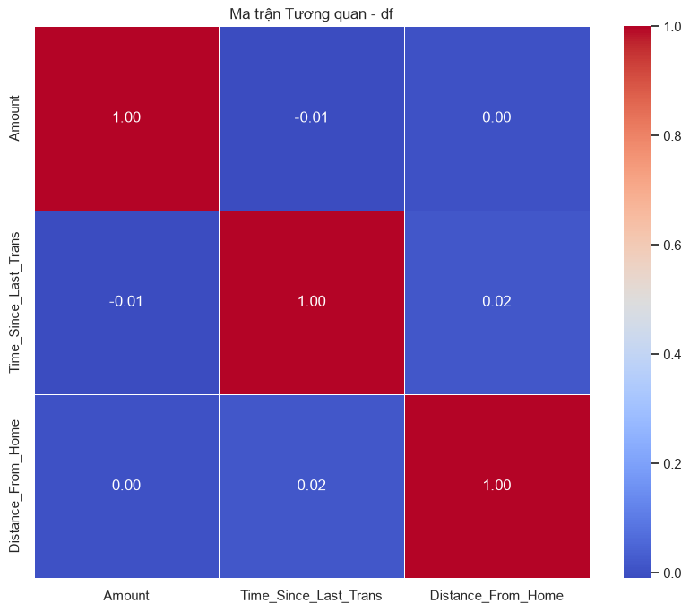
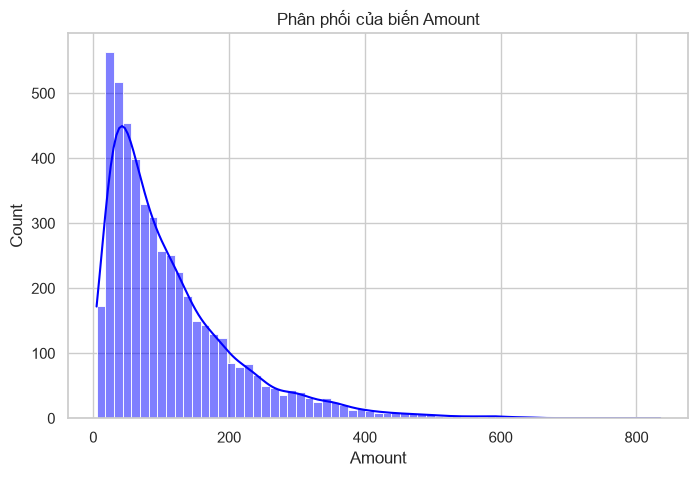
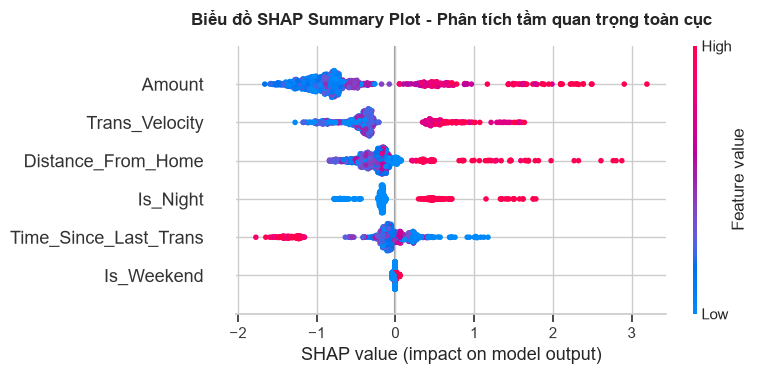
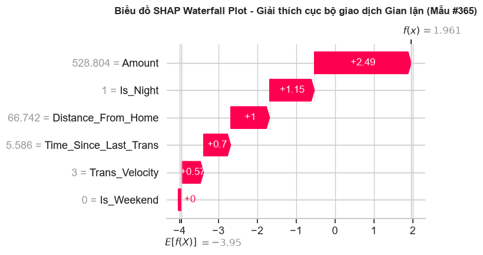
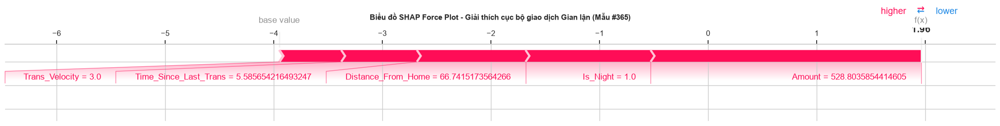

CHƯƠNG 10: TÍCH HỢP MACHINE LEARNING VÀ XAI (EXPLAINABLE AI) VÀO PHÂN TÍCH ĐA BIẾN#
10.1. Tình huống dẫn dắt: Vượt qua giới hạn của mô hình truyền thống#
10.1.1. Bối cảnh thực tiễn và Thách thức của bài toán phát hiện gian lận tài chính#
Trong kỷ nguyên số hóa tài chính, giao dịch không tiền mặt qua thẻ tín dụng và ví điện tử đã trở thành huyết mạch của nền kinh tế toàn cầu. Theo báo cáo từ các tổ chức tài chính lớn, tổng giá trị giao dịch gian lận thẻ tín dụng trên toàn thế giới đã vượt ngưỡng hàng chục tỷ USD mỗi năm và tiếp tục tăng trưởng với tốc độ đáng ngại. Gian lận tài chính không chỉ gây thiệt hại trực tiếp về mặt tiền tệ cho các ngân hàng và tổ chức phát hành thẻ, mà còn bào mòn niềm tin của người tiêu dùng, tăng chi phí vận hành hệ thống bảo mật, và gián tiếp ảnh hưởng đến tính ổn định của thị trường tài chính.
Đối với các ngân hàng thương mại, bài toán phát hiện gian lận (Credit Card Fraud Detection) là một cuộc chiến không hồi kết và cực kỳ không cân sức. Nhóm phân tích rủi ro phải đối mặt với ba thách thức cốt lõi sau:
Thứ nhất là sự mất cân bằng dữ liệu cực đoan (Extreme Class Imbalance). Trong một tập dữ liệu giao dịch thực tế, số lượng giao dịch gian lận thường chỉ chiếm một tỷ lệ vô cùng nhỏ, dao động từ \(0.05\%\) đến \(0.2\%\) tổng số giao dịch. Điều này nghĩa là trong 1 triệu giao dịch phát sinh, chỉ có khoảng 500 đến 2.000 giao dịch là bất hợp pháp. Về mặt thống kê và học máy, sự mất cân bằng này khiến các mô hình phân loại dễ bị thiên lệch (biased) về phía lớp đa số (giao dịch hợp pháp), dẫn đến tỷ lệ bỏ sót gian lận (False Negative) rất cao.
Thứ hai là tính chất động và tinh vi của các phương thức gian lận (Dynamic and Sophisticated Fraud Patterns). Các đối tượng gian lận không sử dụng một kịch bản cố định. Chúng liên tục thay đổi hành vi để né tránh các quy tắc phát hiện rủi ro của ngân hàng. Một giao dịch gian lận có thể không chỉ đơn thuần là việc chi tiêu một số tiền lớn bất thường, mà là một chuỗi các hành vi phức tạp: ví dụ, bắt đầu bằng một giao dịch thử nghiệm với số tiền cực nhỏ tại một quốc gia xa lạ để kiểm tra xem thẻ có hoạt động không (card testing), tiếp theo là chuỗi giao dịch mua sắm hàng hóa có tính thanh khoản cao (như đồ điện tử, thẻ quà tặng) trong một khoảng thời gian cực ngắn (high-velocity transactions), kết hợp với sự thay đổi đột ngột về vị trí địa lý so với thói quen chi tiêu lịch sử của chủ thẻ.
Thứ ba là yêu cầu vận hành theo thời gian thực (Real-time Processing Constraint). Một mô hình phát hiện gian lận không thể chạy ngoại tuyến (offline) vào cuối ngày để báo cáo kết quả. Hệ thống chấm điểm rủi ro (fraud scoring system) bắt buộc phải đưa ra quyết định chấp nhận hoặc từ chối giao dịch trong vòng vài mili giây (milliseconds) kể từ khi chủ thẻ quẹt thẻ hoặc nhấn nút thanh toán trực tuyến. Điều này đòi hỏi mô hình không chỉ có độ chính xác cao mà còn phải tối ưu hóa về tốc độ tính toán.
10.1.2. Giới hạn nội tại của mô hình hồi quy truyền thống (Logistic Regression)#
Trong nhiều thập kỷ, Hồi quy Logistic (Logistic Regression) - vốn đã được nghiên cứu kỹ ở Chương 7 - là công cụ tiêu chuẩn và gần như duy nhất được sử dụng trong các hệ thống chấm điểm rủi ro và phê duyệt tín dụng tại các ngân hàng thương mại nhờ vào các đặc tính ưu việt của nó. Mô hình Hồi quy Logistic ước lượng xác suất xảy ra gian lận thông qua hàm sigmoid:
Sức hấp dẫn lớn nhất của Hồi quy Logistic nằm ở tính diễn giải thống kê hiển ngôn (statistical interpretability). Các hệ số hồi quy \(\beta_j\) sau khi mũ hóa (exponentiation) sẽ đại diện cho tỷ số cơ hội (Odds Ratio - OR):
Cho biết khi biến độc lập \(X_j\) tăng một đơn vị (các biến khác giữ nguyên), cơ hội xảy ra giao dịch gian lận sẽ thay đổi bao nhiêu lần. Đặc tính này cho phép các kiểm toán viên ngân hàng, các nhà quản lý rủi ro và các cơ quan quản lý nhà nước dễ dàng hiểu và phê duyệt mô hình, đồng thời dễ dàng thiết lập các ngưỡng cắt (cut-off thresholds) dựa trên khẩu vị rủi ro thống kê rõ ràng.
Tuy nhiên, khi đối mặt với các dữ liệu giao dịch hiện đại có số lượng biến lớn và mối quan hệ phi tuyến phức tạp, Hồi quy Logistic bộc lộ những giới hạn nội tại không thể khắc phục:
Giả định tuyến tính trên thang logit (Linearity Assumption): Hồi quy Logistic giả định mối quan hệ giữa các biến độc lập và log-odds của biến phụ thuộc là tuyến tính. Trong bài toán gian lận, mối quan hệ này thường là phi tuyến tính sâu sắc. Ví dụ, rủi ro gian lận không tăng tuyến tính theo số tiền giao dịch. Một giao dịch có giá trị trung bình thấp có thể có rủi ro thấp, giao dịch lớn có rủi ro cao hơn, nhưng giao dịch cực kỳ lớn (như mua bất động sản hoặc chuyển khoản doanh nghiệp lớn) đã qua kiểm duyệt bổ sung lại có thể có rủi ro gian lận thực tế thấp hơn. Để chụp được mối quan hệ phi tuyến này, nhà phân tích phải thực hiện rời rạc hóa biến số (binning/discretization) hoặc biến đổi phi tuyến thủ công (như log, căn bậc hai, hoặc đa thức). Đây là một quy trình tốn thời gian, mang tính cảm tính và dễ bỏ sót cấu trúc thực tế của dữ liệu.
Bỏ sót các tương tác bậc cao (Failure to Capture High-Order Interactions): Gian lận tài chính hầu như không bao giờ được định nghĩa bởi một biến đơn lẻ. Nó là sự kết hợp đồng thời của nhiều yếu tố (interaction effects). Ví dụ: ‘Số tiền giao dịch lớn’ tự bản thân nó không đáng ngờ, nhưng ‘Số tiền giao dịch lớn’ kết hợp với ‘Thời gian giao dịch vào lúc 2 giờ sáng’ và ‘Khoảng cách địa lý từ nơi quẹt thẻ đến nhà chủ thẻ lớn hơn 500 km’ sẽ tạo ra một tín hiệu cảnh báo cực kỳ mạnh mẽ. Trong Hồi quy Logistic, để mô hình hóa hiệu ứng tương tác này, chúng ta phải đưa vào các biến tương tác tích (cross-product terms) như \(X_i \times X_j\) hoặc \(X_i \times X_j \times X_k\). Với \(d\) biến ban đầu, số lượng tương tác bậc hai là \(d(d-1)/2\) và tương tác bậc ba tăng lên theo hàm mũ. Việc đưa quá nhiều biến tương tác vào mô hình dẫn đến hiện tượng Multicollinearity (multicollinearity) nghiêm trọng, làm mất tính ổn định của các ước lượng hệ số hồi quy \(\beta\), đồng thời gây ra overfitting và bùng nổ chiều dữ liệu (curse of dimensionality).
Sự nhạy cảm với các biến giả lập và nhiễu (Sensitivity to Multicollinearity and Noise): Hồi quy Logistic sử dụng phương pháp ước lượng hợp lý cực đại (Maximum Likelihood Estimation - MLE). Khi dữ liệu có các biến độc lập tương quan mạnh với nhau (ví dụ: các biến đại diện cho các khía cạnh khác nhau của hành vi chi tiêu lịch sử), ma trận hiệp phương sai của các hệ số hồi quy sẽ bùng nổ, làm cho các ước lượng hệ số trở nên cực kỳ nhạy cảm với các thay đổi nhỏ trong tập dữ liệu huấn luyện. Điều này làm giảm độ tin cậy của việc diễn giải mô hình.
Trong thực tế, khi áp dụng Hồi quy Logistic lên bộ dữ liệu gian lận thẻ tín dụng chưa qua xử lý kỹ thuật tính năng (feature engineering) phức tạp, mô hình thường chỉ đạt độ chính xác (Accuracy) quanh mức \(75\%\) đến \(80\%\), với chỉ số Recall cho lớp gian lận cực kỳ thấp. Điều này đồng nghĩa với việc ngân hàng sẽ bỏ lọt phần lớn các giao dịch gian lận tinh vi, dẫn đến tổn thất tài chính trực tiếp và nghiêm trọng.
10.1.3. Sự trỗi dậy của mô hình phi tuyến tính và ‘Nghịch lý Hộp đen’ (Black-box Paradox)#
Để giải quyết triệt để các giới hạn của mô hình hồi quy tuyến tính truyền thống, ngành tài chính đã chứng kiến một bước chuyển dịch công nghệ mạnh mẽ sang việc ứng dụng các mô hình Học máy phi tuyến (Non-linear Machine Learning Models), tiêu biểu là các thuật toán dựa trên cây quyết định (Tree-based Models) như Random Forest (Bagging) và XGBoost, LightGBM (Boosting).
Các mô hình này sở hữu những ưu điểm vượt trội giúp phá vỡ các giới hạn của Hồi quy Logistic:
Khả năng tự động phát hiện phi tuyến tính: Cơ chế phân nhánh (recursive partitioning) của cây quyết định cho phép mô hình học được các hàm bậc thang phi tuyến tính cực kỳ phức tạp từ dữ liệu mà không cần bất kỳ sự biến đổi thủ công nào từ phía con người.
Tự động bắt cặp các tương tác bậc cao: Mỗi nhánh sâu hơn trong cây quyết định biểu diễn một điều kiện ràng buộc phụ thuộc vào các nhánh phía trên nó. Do đó, một cây quyết định có độ sâu \(D\) có thể tự động ghi nhận các tương tác phi tuyến bậc \(D\) giữa các biến số một cách tự nhiên và hiệu quả, giải phóng nhà phân tích khỏi quy trình thiết kế biến tương tác thủ công phức tạp.
Khả năng chống chịu nhiễu và dữ liệu mất cân bằng: Các thuật toán ensemble như Random Forest sử dụng cơ chế lấy mẫu ngẫu nhiên có lặp lại (Bootstrap Aggregation) giúp giảm phương sai (variance) của mô hình, trong khi XGBoost sử dụng hàm mất mát có phạt regularization (L1/L2) giúp kiểm soát overfitting hiệu quả ngay cả trên các tập dữ liệu có độ mất cân bằng lớp cực đoan.
Nhờ những đặc tính này, các mô hình Học máy phi tuyến dễ dàng nâng hiệu năng dự báo phát hiện gian lận lên các mức vượt trội, đạt AUC (Area Under the ROC Curve) trên \(95\%\) và cải thiện rõ rệt chỉ số F1-score cũng như Recall cho lớp gian lận.
Tuy nhiên, sự gia tăng vượt bậc về hiệu năng dự báo này lại đi kèm với một cái giá rất đắt về mặt nhận thức: ‘Nghịch lý Hộp đen’ (Black-box Paradox). Khi chúng ta kết hợp hàng trăm cây quyết định phức tạp (như trong Random Forest hoặc XGBoost), mô hình không còn là một phương trình toán học đơn giản để con người có thể nhìn vào và hiểu ngay lập tức. Quyết định dự báo một giao dịch là gian lận hay hợp pháp được đưa ra dựa trên sự tổng hợp của hàng nghìn quy tắc phân nhánh chéo nhau trong một không gian đa chiều.
Đối với các ngân hàng thương mại, một mô hình ‘Hộp đen’ dù chính xác đến mấy cũng khó có thể được đưa vào vận hành thực tế do ba rào cản lớn:
Rào cản pháp lý và tuân thủ (Regulatory Compliance): Các đạo luật bảo vệ người tiêu dùng và dữ liệu hiện đại, như Quy định chung về bảo vệ dữ liệu (GDPR) của Liên minh Châu Âu hay các hướng dẫn quản lý rủi ro mô hình (như SR 11-7 của Cục Dự trữ Liên bang Mỹ), quy định rõ ‘Quyền được giải thích’ (Right to Explanation) của khách hàng. Nếu một ngân hàng sử dụng AI để tự động từ chối một giao dịch hoặc khóa thẻ của khách hàng, ngân hàng bắt buộc phải có khả năng giải trình một cách minh bạch lý do tại sao quyết định đó được đưa ra. Một mô hình không thể giải thích sẽ không được các cơ quan thanh tra phê duyệt vận hành.
Yêu cầu kiểm soát rủi ro hoạt động (Operational Risk Management): Các nhà quản lý rủi ro cần biết mô hình đưa ra quyết định dựa trên những logic nào để đảm bảo mô hình không bị lừa bởi các dữ liệu nhiễu (spurious correlations) hoặc các thuộc tính không công bằng (bias). Nếu mô hình học được một mối quan hệ sai lệch từ dữ liệu lịch sử (ví dụ: đánh giá tất cả các giao dịch từ một khu vực địa lý cụ thể là gian lận), điều này có thể dẫn đến phân biệt đối xử nghiêm trọng và khủng hoảng truyền thông cho ngân hàng.
Sự phối hợp giữa Người và Máy (Human-in-the-loop): Khi hệ thống AI phát hiện một giao dịch đáng ngờ, nó thường chuyển tiếp thông tin đến các điều tra viên gian lận (fraud analysts) để xác minh thủ công. Nếu mô hình chỉ đưa ra một con số xác suất vô hồn mà không giải thích nguyên nhân, điều tra viên sẽ mất rất nhiều thời gian để rà soát lại toàn bộ lịch sử giao dịch. Ngược lại, nếu mô hình chỉ rõ: ‘Giao dịch này bị đánh giá rủi ro cao vì số tiền vượt mức trung bình 5 lần và vị trí giao dịch cách vị trí của giao dịch trước đó 3 giờ bay dù khoảng thời gian thực tế giữa hai giao dịch chỉ là 10 phút’, điều tra viên có thể ngay lập tức đưa ra quyết định gọi điện xác minh với chủ thẻ.
10.1.4. Lộ trình giải pháp: Explainable AI (XAI) và cấu trúc Chương 10#
Làm thế nào để chúng ta có thể dung hòa được hai mục tiêu dường như đối nghịch nhau: Độ chính xác dự báo tối đa của các mô hình Học máy phi tuyến phức tạp và Tính minh bạch, giải thích được của các mô hình thống kê truyền thống? Câu trả lời nằm ở lĩnh vực Explainable AI (XAI - Explainable AI - XAI được).
XAI là tập hợp các phương pháp và thuật toán toán học được thiết kế để phân rã và diễn giải các quyết định của các mô hình học máy phức tạp thành các thông tin có thể hiểu được bởi con người. Trong chương này, chúng ta sẽ tập trung vào hai hướng tiếp cận XAI phổ biến và mạnh mẽ nhất hiện nay: LIME (Local Interpretable Model-agnostic Explanations) và SHAP (SHapley Additive exPlanations). Các phương pháp này cho phép chúng ta biến đổi các mô hình ‘hộp đen’ thành các cấu trúc ‘hộp kính’ (glass-box), cung cấp khả năng giải thích chi tiết cả ở cấp độ toàn cục (Global Interpretability - các yếu tố nào quan trọng nhất đối với toàn bộ mô hình) và cấp độ cục bộ (Local Interpretability - tại sao một giao dịch cụ thể của một khách hàng cụ thể lại bị đánh giá là gian lận).
Để trang bị cho người đọc một lộ trình học tập toàn diện từ lý thuyết đến thực hành thực tiễn, Chương 10 được cấu trúc theo các phần logic sau:
Phần 10.2: Hệ thống hóa hành trình tiến hóa từ các mô hình hồi quy tuyến tính/logistic truyền thống lên các thuật toán cây quyết định (Decision Trees) và các phương pháp học tập kết hợp (Ensemble Learning) như Random Forest (Bagging) và XGBoost (Boosting). Chúng ta sẽ phân tích sâu sắc cơ chế toán học đằng sau cách các thuật toán này xây dựng ranh giới quyết định phi tuyến và xử lý các tương tác biến số phức tạp.
Phần 10.3: Đi sâu vào kỹ thuật Tối ưu hóa siêu tham số (Hyperparameter Tuning) sử dụng GridSearchCV và RandomizedSearchCV để kiểm soát sự cân bằng giữa Bias và Variance, tránh hiện tượng overfitting khi huấn luyện các mô hình ensemble phức tạp.
Phần 10.4: Khám phá nền tảng toán học và triết lý thiết kế của hai công cụ XAI hàng đầu: LIME (tiếp cận bằng cách giả lập tuyến tính cục bộ) và SHAP (dựa trên nền tảng Lý thuyết trò chơi hợp tác của Lloyd Shapley - giải thưởng Nobel Kinh tế). Chúng ta sẽ chứng minh cách SHAP đảm bảo các tính chất toán học quan trọng về sự đóng góp công bằng của các biến số.
Phần 10.5: Thực hành xây dựng một pipeline hoàn chỉnh bằng Python. Chúng ta sẽ sử dụng bộ dữ liệu thực tế về gian lận thẻ tín dụng
credit_card_fraud_xgb.csvđể huấn luyện một mô hình phân loại XGBoost tối ưu, sau đó áp dụng thư việnshapđể vẽ biểu đồ Waterfall, Force Plot và Summary Plot để giải thích rõ ràng quyết định phê duyệt rủi ro giao dịch trước ban giám đốc và các kiểm toán viên.
Thông qua chương này, người đọc sẽ hiểu rằng Machine Learning và Thống kê học truyền thống không phải là hai thế giới đối lập nhau. Thay vào đó, khi kết hợp học máy với các phương pháp giải thích mô hình hiện đại XAI, chúng ta sẽ có được một công cụ phân tích đa biến cực kỳ mạnh mẽ, vừa đạt độ chính xác tối ưu trong dự báo rủi ro, vừa giữ vững được tính minh bạch và độ tin cậy khoa học cần thiết cho các quyết định quản trị tài chính cốt lõi.
10.2. Từ Hồi quy Tuyến tính/Logistic tiến lên Decision Trees và Ensemble Learning#
Sự dịch chuyển từ mô hình thống kê tuyến tính cổ điển sang các mô hình học máy phi tuyến (non-linear machine learning models) đại diện cho một bước ngoặt lớn về mặt phương pháp luận trong phân tích đa biến. Để hiểu tại sao các mô hình dựa trên cây (tree-based models) và các phương pháp học tập kết hợp (ensemble learning) có khả năng vượt trội trong việc dự báo và phát hiện các mẫu dữ liệu phức tạp, trước hết chúng ta cần đặt chúng trong sự so sánh trực tiếp với các mô hình tuyến tính về mặt hình học và lý thuyết tối ưu hóa.
Trong các chương trước, từ Hồi quy Tuyến tính Bội (Chương 6) đến Hồi quy Logistic và LDA (Chương 7), cấu trúc cơ bản của mô hình luôn tuân theo một dạng hàm tuyến tính của các biến độc lập. Cụ thể, ranh giới quyết định (decision boundary) phân tách giữa hai lớp trong Hồi quy Logistic là một siêu phẳng (hyperplane) được định nghĩa bởi phương trình tuyến tính:
Về mặt hình học, siêu phẳng này chia không gian tính năng \(d\) chiều thành hai nửa không gian phẳng. Nếu ranh giới phân tách thực sự trong tự nhiên giữa lớp gian lận và lớp hợp pháp là tuyến tính (hoặc gần tuyến tính), mô hình Logistic sẽ hoạt động cực kỳ hiệu quả, cho ra các ước lượng hệ số có phương sai thấp và tính diễn giải cao. Tuy nhiên, trong các bài toán thực tiễn phức tạp như phát hiện gian lận thẻ tín dụng hay phân tích hành vi người tiêu dùng, ranh giới quyết định thực tế thường có dạng phi tuyến tính cao và uốn lượn phức tạp trong không gian đa chiều. Các biến số thường không tác động độc lập hay cộng tính (additive) lên kết quả dự báo, mà tương tác với nhau theo những cách phi tuyến tính nghiêm trọng.
Các mô hình dựa trên cây quyết định giải quyết bài toán này bằng cách tiếp cận phi tham số (non-parametric). Thay vì cố gắng ép dữ liệu vào một siêu phẳng tuyến tính toàn cục, chúng thực hiện phân hoạch (partitioning) không gian tính năng thành các vùng hình hộp chữ nhật nhỏ hơn (hyper-rectangles) bằng các đường chia vuông góc với các trục tọa độ. Trên mỗi vùng này, mô hình sẽ gán một giá trị dự báo hằng số. Bằng cách kết hợp nhiều phân hoạch như vậy, mô hình có thể xấp xỉ bất kỳ ranh giới quyết định phi tuyến phức tạp nào mà không cần nhà nghiên cứu phải xác định trước dạng hàm (functional form) của mối quan hệ.
Trong phần này, chúng ta sẽ khảo sát sâu sắc cơ chế toán học và logic vận hành của hành trình tiến hóa này: bắt đầu từ một Cây Quyết định đơn lẻ, tiến lên cơ chế tích hợp song song Random Forest (Bagging) nhằm giảm phương sai, và cuối cùng đạt tới đỉnh cao về hiệu năng dự báo với cơ chế học tuần tự Gradient Boosting và XGBoost (Boosting) nhằm giảm thiểu thiên lệch.
10.2.1. Cây quyết định và Bagging (Random Forest)#
1. Cấu trúc và Cơ chế phân nhánh của Cây Quyết định (Decision Trees)#
Một cây quyết định (Decision Tree) biểu diễn một cấu trúc phân cấp bao gồm các nút gốc (root node), nút quyết định (decision/split nodes), và nút lá (terminal/leaf nodes). Quá trình xây dựng một cây quyết định bắt đầu từ nút gốc chứa toàn bộ dữ liệu huấn luyện, sau đó phân chia dữ liệu một cách đệ quy thành các nhóm con nhỏ hơn dựa trên các quy tắc điều kiện của các tính năng.
Thuật toán phổ biến nhất để xây dựng cây quyết định là Phân hoạch nhị phân đệ quy (Recursive Binary Splitting). Đây là một thuật toán tham lam (greedy algorithm) vì tại mỗi bước của quy trình, nó luôn chọn lựa chọn chia nhánh tối ưu nhất tại thời điểm hiện tại, thay vì nhìn xa hơn để chọn một phân chia có thể dẫn đến một cây tốt hơn ở các bước tiếp theo.
Về mặt toán học, giả sử chúng ta có một vùng không gian tính năng \(R\). Chúng ta muốn tìm biến tính năng \(X_j\) và điểm cắt (split point) \(s\) để chia vùng \(R\) thành hai nửa không gian con \(R_1(j, s) = \{X | X_j < s\}\) và \(R_2(j, s) = \{X | X_j \geq s\}\) sao cho hàm mục tiêu được tối ưu hóa.
Đối với bài toán Hồi quy (Regression Trees): Hàm mục tiêu cần tối thiểu hóa là tổng bình phương sai số (Residual Sum of Squares - RSS):
trong đó \(\hat{y}_{R_1}\) và \(\hat{y}_{R_2}\) là trung bình cộng của các giá trị mục tiêu \(y\) của các quan sát rơi vào vùng \(R_1\) và \(R_2\) tương ứng. Thuật toán sẽ duyệt qua tất cả các tính năng \(X_j\) (\(j = 1, \dots, d\)) và tất cả các giá trị cắt khả dĩ \(s\) của từng tính năng để tìm ra cặp \((j, s)\) làm giảm RSS nhiều nhất.
Đối với bài toán Phân loại (Classification Trees): Thay vì sử dụng RSS, chúng ta cần các chỉ số đo lường độ thuần khiết (purity) hoặc mức độ hỗn loạn (impurity) của các nút lá. Giả sử \(p_{mk}\) là tỷ lệ các quan sát thuộc lớp \(k\) (\(k=1,\dots, K\)) tại nút lá \(m\). Hai chỉ số phổ biến nhất là:
Chỉ số vẩn đục Gini (Gini Impurity): Đo lường tổng phương sai trên \(K\) lớp chính:
Chỉ số Gini nhận giá trị nhỏ (gần 0) khi nút lá có tính thuần khiết cao, tức là hầu hết các quan sát đều tập trung vào một lớp đơn lẻ. Đây là chỉ số mặc định được sử dụng trong thuật toán CART (Classification and Regression Trees) của thư viện scikit-learn.
Độ hỗn loạn Entropy (Entropy/Information Gain): Dựa trên lý thuyết thông tin của Shannon:
Tương tự như Gini, Entropy sẽ nhận giá trị gần 0 nếu nút \(m\) cực kỳ thuần khiết, và đạt giá trị cực đại là \(\log_2 K\) khi các quan sát được phân bổ đều cho tất cả các lớp (mức độ hỗn loạn cao nhất). Việc chọn phân chia nhánh \((j, s)\) sẽ nhằm mục đích cực đại hóa mức giảm Gini hoặc Entropy sau khi chia (được gọi là Information Gain).
2. Overfitting và Chiến lược Cắt tỉa cây (Pruning)#
Một cây quyết định đơn lẻ có một điểm yếu chí mạng: nó cực kỳ dễ bị Overfitting (overfitting). Nếu chúng ta cho phép cây phát triển tự do mà không có ràng buộc, thuật toán sẽ liên tục chia nhánh cho đến khi mọi nút lá đều hoàn toàn thuần khiết (chỉ chứa duy nhất 1 quan sát hoặc các quan sát cùng một lớp). Khi đó, sai số trên tập huấn luyện sẽ bằng 0, nhưng mô hình sẽ có phương sai (variance) cực kỳ lớn. Nó sẽ ghi nhớ cả những nhiễu ngẫu nhiên trong dữ liệu huấn luyện và sẽ dự báo rất tồi trên dữ liệu kiểm thử mới.
Để giải quyết vấn đề này, có hai chiến lược kiểm soát kích thước cây:
Dừng sớm (Pre-pruning/Early Stopping): Thiết lập các điều kiện biên để dừng việc chia nhánh sớm, chẳng hạn như giới hạn độ sâu tối đa của cây (
max_depth), số lượng quan sát tối thiểu cần thiết để tiếp tục chia một nút (min_samples_split), hoặc số lượng quan sát tối thiểu tại một nút lá (min_samples_leaf). Mặc dù đơn giản và trực quan, dừng sớm có thể bỏ lỡ các phân chia tốt ở phía sau nếu một phân chia không tốt ngay trước đó là bước đệm bắt buộc.Cắt tỉa cây (Post-pruning/Cost Complexity Pruning): Cho phép cây phát triển hoàn toàn đến kích thước cực đại \(T_0\), sau đó tiến hành tỉa bớt các nhánh không đóng góp nhiều vào khả năng tổng quát hóa của mô hình. Về mặt toán học, chúng ta tìm cách tối thiểu hóa hàm mục tiêu phạt độ phức tạp:
trong đó \(R(T)\) là sai số phân loại (hoặc RSS) của cây \(T\), \(|T|\) là số lượng nút lá của cây, và \(\alpha \geq 0\) là siêu tham số phạt độ phức tạp (tuning parameter). Khi \(\alpha = 0\), cây tối ưu chính là cây cực đại \(T_0\). Khi \(\alpha\) tăng dần, mô hình sẽ phạt nặng các cây có nhiều nút lá, ép cây phải tự cắt tỉa các nhánh phụ để trở nên đơn giản hơn. Siêu tham số \(\alpha\) thường được lựa chọn thông qua kiểm định chéo (cross-validation).
3. Kỹ thuật Bagging (Bootstrap Aggregation) nhằm giảm Phương sai#
Để khắc phục triệt để tính không ổn định và phương sai lớn của một cây quyết định đơn lẻ, Leo Breiman đã giới thiệu phương pháp Bagging (Bootstrap Aggregation) vào năm 1996. Triết lý của Bagging dựa trên một định lý thống kê cơ bản: nếu chúng ta có \(B\) biến ngẫu nhiên độc lập và có cùng phân phối (i.i.d) với phương sai \(\sigma^2\), thì phương sai của trung bình cộng các biến này là \(\sigma^2/B\). Điều này nghĩa là việc trung bình hóa (averaging) các mô hình dự báo độc lập sẽ giúp làm giảm phương sai của dự báo tổng thể mà không làm thay đổi thiên lệch (bias).
Quy trình thực hiện Bagging gồm hai bước chính:
Bootstrap Sampling: Từ tập dữ liệu huấn luyện ban đầu có kích thước \(N\), chúng ta lấy mẫu ngẫu nhiên có lặp lại (sampling with replacement) \(B\) lần để tạo ra \(B\) tập dữ liệu bootstrap con (mỗi tập cũng có kích thước \(N\)). Về mặt toán học, xác suất để một mẫu cụ thể không được chọn trong một tập bootstrap khi \(N \to \infty\) tiến tới:
Điều này nghĩa là mỗi tập bootstrap sẽ bỏ sót khoảng \(36.8\%\) số quan sát gốc. Những quan sát bị bỏ sót này được gọi là Out-of-Bag (OOB). Tập OOB này đóng vai trò như một tập dữ liệu validation tự nhiên, cho phép chúng ta đánh giá hiệu năng của mô hình mà không cần thực hiện kiểm định chéo độc lập.
Aggregation: Chúng ta huấn luyện độc lập \(B\) mô hình cây quyết định (không cắt tỉa) trên \(B\) tập bootstrap tương ứng. Dự báo cuối cùng của mô hình Bagging được tổng hợp từ dự báo của tất cả các cây:
Đối với bài toán hồi quy (Regression): Lấy trung bình cộng dự báo:
Đối với bài toán phân loại (Classification): Áp dụng cơ chế bỏ phiếu đa số (majority voting), lớp nào được đa số các cây dự báo sẽ là kết quả cuối cùng.
4. Random Forest: Đột phá bằng cách khử tương quan các cây#
Mặc dù Bagging cải thiện rõ rệt hiệu năng so với một cây đơn lẻ, nó gặp phải một giới hạn lớn khi các cây trong hệ thống bị tương quan mạnh (highly correlated). Hãy tưởng tượng trong tập dữ liệu có một tính năng cực kỳ mạnh (ví dụ: số tiền giao dịch bất thường trong bài toán gian lận). Trong quy trình Bagging, hầu như tất cả \(B\) cây quyết định đều sẽ chọn tính năng này làm điểm chia nhánh đầu tiên ở nút gốc. Hệ quả là, các cây được tạo ra sẽ có cấu trúc rất giống nhau, dẫn đến tương quan \(\rho\) giữa dự báo của các cây rất cao.
Về mặt toán học, nếu chúng ta trung bình hóa \(B\) biến ngẫu nhiên có cùng phương sai \(\sigma^2\) và có hệ số tương quan dương \(\rho\) giữa mọi cặp biến, thì phương sai của giá trị trung bình là:
Khi số lượng cây \(B \to \infty\), số hạng thứ hai tiến về 0, nhưng số hạng thứ nhất \(\rho \sigma^2\) vẫn giữ nguyên. Do đó, nếu các cây tương quan mạnh (\(\rho\) lớn), khả năng giảm phương sai của Bagging sẽ bị giới hạn nghiêm trọng.
Random Forest (Rừng Ngẫu Nhiên), được Leo Breiman phát triển năm 2001, đã giải quyết triệt để vấn đề này bằng một cải tiến cực kỳ đơn giản nhưng mang tính đột phá: Khử tương quan các cây (De-correlating the trees) thông qua cơ chế chọn ngẫu nhiên tập con các tính năng (feature bagging) tại mỗi điểm chia nhánh.
Cụ thể, khi xây dựng các cây quyết định trong Random Forest, tại mỗi nút chia nhánh, thuật toán không cho phép duyệt qua toàn bộ \(d\) tính năng ban đầu. Thay vào đó, nó chỉ chọn ngẫu nhiên một tập con gồm \(m\) tính năng (\(m < d\)) và chỉ tìm điểm cắt tối ưu trên \(m\) tính năng này. Giá trị tiêu chuẩn của \(m\) thường được chọn là:
Đối với bài toán phân loại: \(m = \sqrt{d}\)
Đối với bài toán hồi quy: \(m = d/3\)
Bằng cách giới hạn số lượng tính năng được xem xét tại mỗi nút chia, chúng ta ép buộc các cây phải sử dụng các tính năng khác nhau để giải thích dữ liệu. Điều này làm giảm đáng kể hệ số tương quan \(\rho\) giữa các cây trong rừng. Dù việc này có thể làm tăng nhẹ bias của từng cây đơn lẻ (do không được tiếp cận đầy đủ các biến tốt nhất tại mọi nút), nhưng sự sụt giảm mạnh của hệ số tương quan \(\rho\) giúp cho phương sai của mô hình tổng thể giảm mạnh khi trung bình hóa. Kết quả là Random Forest đạt được hiệu năng dự báo vượt trội và tính ổn định cực cao so với Bagging thông thường.
10.2.2. Boosting: Gradient Boosting, XGBoost#
1. Triết lý của Boosting và sự khác biệt với Bagging#
Trong khi Bagging và Random Forest hoạt động theo cơ chế tích hợp song song (parallel ensemble) - xây dựng các cây độc lập rồi gộp kết quả nhằm giảm phương sai (Variance) - thì Boosting tiếp cận bài toán theo một triết lý hoàn toàn ngược lại: tích hợp tuần tự (sequential ensemble) nhằm giảm thiểu thiên lệch (Bias).
Triết lý của Boosting là biến đổi một tập hợp các mô hình học yếu (weak learners - các mô hình có độ chính xác chỉ cao hơn đoán ngẫu nhiên một chút, thường là các cây quyết định rất nông như cây 1-2 lớp) thành một mô hình học mạnh (strong learner) bằng cách huấn luyện chúng tuần tự. Mỗi cây mới trong chuỗi Boosting không được huấn luyện độc lập mà được thiết kế đặc biệt để tập trung sửa chữa những lỗi sai (residuals) mà các cây trước đó trong chuỗi đã phạm phải. Dự báo cuối cùng là tổng có trọng số của dự báo từ tất cả các cây trong chuỗi.
2. Cơ chế toán học của Gradient Boosting#
Gradient Boosting là một sự khái quát hóa của thuật toán Boosting cổ điển (như AdaBoost), chuyển đổi việc học sửa lỗi thành một bài toán tối ưu hóa hàm mất mát (loss function) bằng phương pháp Gradient Descent trong không gian hàm (Gradient Descent in Function Space), được Jerome Friedman đề xuất năm 2001.
Giả sử chúng ta muốn tìm một hàm dự báo \(F(\mathbf{x})\) để tối thiểu hóa kỳ vọng của một hàm mất mát \(L(y, F(\mathbf{x}))\) trên tập dữ liệu huấn luyện:
Trong Gradient Boosting, chúng ta xây dựng mô hình \(F(\mathbf{x})\) một cách cộng tính qua các bước \(m = 1, \dots, M\):
trong đó \(h_m(\mathbf{x})\) là một cây quyết định đơn giản (weak learner) được thêm vào hệ thống tại bước \(m\), và \(\gamma_m\) là hệ số nhân (trọng số của cây).
Để tìm cây \(h_m(\mathbf{x})\) tối ưu giúp giảm thiểu hàm mất mát \(\mathcal{L}(F)\), Gradient Boosting thực hiện xấp xỉ bước đi theo hướng ngược chiều của gradient (gradient descent). Đối với mỗi quan sát \(i\), chúng ta tính toán độ dốc âm (pseudo-residuals), đóng vai trò như các lỗi sai cần sửa đổi của mô hình hiện tại \(F_{m-1}\):
Ví dụ, nếu chúng ta sử dụng hàm mất mát bình phương (Squared Error Loss) cho bài toán hồi quy: \(L(y, F(\mathbf{x})) = \frac{1}{2}(y - F(\mathbf{x}))^2\), thì độ dốc âm chính là sai số thực tế:
Sau khi tính toán \(r_{im}\) cho toàn bộ \(N\) quan sát, chúng ta huấn luyện một cây quyết định mới \(h_m(\mathbf{x})\) để khớp (fit) với tập dữ liệu mục tiêu mới là các phần dư \(\{(\mathbf{x}_i, r_{im})\}_{i=1}^N\). Cây quyết định này cố gắng mô hình hóa hướng đi tốt nhất trong không gian hàm để giảm thiểu sai số.
Sau khi có cây \(h_m(\mathbf{x})\), chúng ta xác định hệ số co tối ưu \(\gamma_m\) bằng cách giải bài toán tối ưu hóa một chiều:
Cuối cùng, chúng ta cập nhật mô hình với một siêu tham số tốc độ học (learning rate) \(\eta \in (0, 1]\) đóng vai trò co hẹp (shrinkage) để tránh overfitting:
3. XGBoost (Extreme Gradient Boosting) - Đỉnh cao tối ưu cho dữ liệu dạng bảng#
Mặc dù Gradient Boosting truyền thống rất mạnh, nó gặp phải các hạn chế về mặt tốc độ tính toán khi xử lý dữ liệu lớn và không tích hợp sẵn cơ chế kiểm soát overfitting nghiêm ngặt trong hàm mục tiêu. XGBoost (Extreme Gradient Boosting), được phát triển bởi Tianqi Chen năm 2016, đã giải quyết triệt để các hạn chế này và trở thành thuật toán thống trị các cuộc thi khoa học dữ liệu nhờ vào các cải tiến toán học và kỹ thuật tối ưu hóa phần cứng vượt trội.
Các điểm cải tiến cốt lõi của XGBoost bao gồm:
A. Khai triển Taylor bậc hai (Second-Order Taylor Expansion)#
Khác với Gradient Boosting truyền thống chỉ sử dụng đạo hàm bậc nhất (Gradient) để xấp xỉ hàm mất mát, XGBoost áp dụng khai triển Taylor bậc hai để xấp xỉ hàm mục tiêu. Điều này giúp thuật toán tìm ra hướng tối ưu chính xác hơn và hội tụ nhanh hơn rất nhiều.
Giả sử tại bước thứ \(t\), mô hình cần thêm cây \(f_t(\mathbf{x})\) để tối thiểu hóa hàm mục tiêu phạt độ phức tạp:
Áp dụng khai triển Taylor bậc hai cho hàm \(L\) xung quanh điểm \(\hat{y}_i^{(t-1)}\):
trong đó \(g_i\) và \(h_i\) là đạo hàm bậc nhất (gradient) và đạo hàm bậc hai (hessian) của hàm mất mát đối với dự báo tại bước trước:
Bỏ qua số hạng hằng số \(L(y_i, \hat{y}_i^{(t-1)})\) không phụ thuộc vào cây \(f_t\), hàm mục tiêu thu gọn cần tối thiểu hóa tại bước \(t\) là:
B. Thành phần phạt Regularization trong Hàm mục tiêu#
Để kiểm soát chặt chẽ độ phức tạp của cây và ngăn ngừa overfitting, XGBoost đưa thành phần phạt chính quy hóa (regularization) trực tiếp vào cấu trúc của cây \(f_t\). Định nghĩa độ phức tạp của một cây quyết định có \(T\) nút lá và vector trọng số dự báo tại các lá là \(\mathbf{w} = (w_1, \dots, w_T)^\prime\) là:
trong đó \(\gamma\) là tham số phạt số lượng nút lá (tương tự như pruning) và \(\lambda\) là tham số phạt L2 trên các trọng số của lá (ngăn các lá có giá trị dự báo quá cực đoan).
C. Công thức tính Trọng số lá và Điểm chia nhánh tối ưu#
Gọi \(I_j = \{i | q(\mathbf{x}_i) = j\}\) là tập chỉ số của các quan sát được phân vào nút lá \(j\). Chúng ta có thể viết lại hàm mục tiêu thu gọn dưới dạng tích lũy theo từng nút lá:
Bằng cách lấy đạo hàm của \(\tilde{\mathcal{L}}^{(t)}\) theo từng trọng số \(w_j\) và đặt bằng 0, chúng ta tìm được trọng số tối ưu \(w_j^*\) cho mỗi nút lá \(j\):
Thế ngược trọng số tối ưu này vào hàm mục tiêu, chúng ta thu được giá trị tối ưu của hàm mục tiêu (điểm chất lượng của cấu trúc cây):
Giá trị này đóng vai trò đo lường mức độ phù hợp của cấu trúc cây quyết định đối với dữ liệu. Trong quy trình tìm điểm chia nhánh (split finding), XGBoost tính toán điểm Gain (Độ tăng chất lượng) để quyết định có nên chia một nút thành hai nút con Left (L) và Right (R) hay không:
Công thức Gain này phản ánh: (Phần chất lượng của nút con bên trái + Phần chất lượng của nút con bên phải) trừ đi (Chất lượng của nút cha khi chưa chia) trừ đi phí tổn thêm một nút lá \(\gamma\). Nếu Gain > 0, thuật toán sẽ thực hiện chia nhánh.
D. Khả năng tự động xử lý dữ liệu khuyết thiếu (Sparsity-aware Split Finding)#
Trong thực tế giao dịch tài chính, việc khuyết thiếu thông tin là rất phổ biến (ví dụ: thiếu thông tin về vị trí địa lý của thiết bị, hoặc tài khoản mới chưa có lịch sử chi tiêu). XGBoost tích hợp sẵn thuật toán tìm điểm chia có nhận biết tính thưa thớt (sparsity-aware). Tại mỗi nút chia, thuật toán sẽ thử nghiệm gán tất cả các quan sát bị khuyết thiếu vào nhánh bên trái, tính Gain, rồi thử nghiệm gán tất cả vào nhánh bên phải, tính Gain. Hướng đi nào đem lại Gain lớn hơn sẽ được chọn làm hướng đi mặc định (default direction) cho dữ liệu khuyết thiếu tại nút đó.
E. Tối ưu hóa hiệu năng tính toán#
Bên cạnh các ưu điểm toán học, XGBoost đạt tốc độ xử lý vượt trội nhờ cấu trúc thiết kế phần cứng thông minh: sắp xếp và lưu trữ dữ liệu dạng Block theo cột để tính toán song song việc tìm điểm cắt, cơ chế cache-aware để tối ưu hóa việc truy cập bộ nhớ đệm CPU, và thuật toán Out-of-core giúp huấn luyện trên các tập dữ liệu cực lớn vượt quá dung lượng RAM vật lý.
F. Bảng so sánh tổng quan giữa các mô hình từ cổ điển đến hiện đại#
Để tổng kết và cung cấp một góc nhìn hệ thống trước khi bước sang phần tối ưu hóa mô hình, bảng dưới đây so sánh các đặc tính kỹ thuật cốt lõi của bốn mô hình phân tích đa biến đại diện cho các trường phái khác nhau:
Đặc trưng kỹ thuật |
Hồi quy Logistic (Chương 7) |
Cây Quyết định đơn lẻ |
Random Forest (Bagging) |
XGBoost (Boosting) |
|---|---|---|---|---|
Dạng ranh giới quyết định |
Siêu phẳng tuyến tính toàn cục. |
Phân hoạch nhị phân vuông góc với các trục tọa độ. |
Tổ hợp phi tuyến uốn lượn mềm mại từ nhiều phân hoạch. |
Phi tuyến phức tạp và tối ưu hóa mịn theo độ dốc mất mát. |
Tương tác biến số |
Phải khai báo thủ công các biến tương tác (\(X_i X_j\)). |
Tự động ghi nhận tương tác thông qua độ sâu của cây. |
Tự động ghi nhận tương tác trên tập con tính năng. |
Tự động bắt cặp tương tác bậc cao cực kỳ tinh vi. |
Khả năng xử lý phi tuyến |
Tồi (phải biến đổi biến thủ công). |
Tốt (dạng hàm bậc thang). |
Rất tốt. |
Xuất sắc (khai triển Taylor bậc hai tối ưu). |
Độ nhạy với Overfitting |
Thấp (thiên lệch cao, phương sai thấp). |
Cực kỳ cao (phương sai lớn nếu không cắt tỉa). |
Thấp (trung bình hóa giúp giảm phương sai). |
Trung bình-Thấp (được kiểm soát bởi L1/L2 và shrinkage). |
Tính diễn giải (Interpretability) |
Rất cao (thông qua Odds Ratio và p-value). |
Cao (trực quan hóa bằng sơ đồ cây). |
Thấp (Black-box, cần biến quan trọng Feature Importance). |
Rất thấp (Black-box phức tạp, bắt buộc cần công cụ XAI). |
Tốc độ huấn luyện |
Cực nhanh (giải bằng MLE/Newton-Raphson). |
Nhanh (phân hoạch nhị phân tham lam). |
Trung bình (huấn luyện song song nhiều cây độc lập). |
Nhanh đến Rất nhanh (nhờ cấu trúc block song song hóa). |
Tham số điều tiết (Regularization) |
L1 (Lasso) / L2 (Ridge). |
Chi phí phức tạp \(\alpha\), độ sâu tối đa, mẫu tối thiểu. |
Tỷ lệ biến \(m\), số lượng cây \(B\), mẫu tối thiểu. |
\(\lambda\) (L2), \(\gamma\) (phạt lá), \(\eta\) (learning rate), subsample. |
Sự so sánh này chỉ ra một quy luật kinh điển trong học máy và thống kê: Định luật bảo toàn độ phức tạp. Khi ta cố gắng nâng cao hiệu năng dự báo bằng cách chuyển từ Hồi quy Logistic sang Random Forest và XGBoost, chúng ta đang đánh đổi tính diễn giải trực tiếp để lấy khả năng mô hình hóa phi tuyến. Tuy nhiên, sự phát triển của XAI (ở Phần 10.4) sẽ giúp chúng ta vượt qua giới hạn của sự đánh đổi này, đưa XGBoost đạt tới mức độ minh bạch tiệm cận Hồi quy Logistic trong khi vẫn giữ nguyên hiệu năng dự báo vượt trội.
10.3. Tối ưu hóa siêu tham số (Hyperparameter Tuning)#
10.3.1. Sự khác biệt giữa Tham số mô hình (Model Parameters) và Siêu tham số (Hyperparameters)#
Trong quá trình xây dựng các mô hình phân tích và học máy, một sự phân biệt nền tảng nhưng thường bị nhầm lẫn là sự khác nhau giữa Tham số mô hình (Model Parameters) và Siêu tham số (Hyperparameters). Sự hiểu biết thấu đáo về hai khái niệm này là điều kiện tiên quyết để thực hiện việc tối ưu hóa hiệu năng mô hình một cách khoa học.
Tham số mô hình (Model Parameters): Là các biến số nội tại của mô hình được học trực tiếp từ dữ liệu huấn luyện trong quá trình tối ưu hóa hàm mất mát. Chúng đại diện cho tri thức mà mô hình tích lũy được từ dữ liệu thực nghiệm. Ví dụ, trong mô hình Hồi quy Tuyến tính hay Logistic, các tham số chính là các hệ số hồi quy \(\beta_j\). Trong mô hình mạng nơ-ron, đó là các trọng số liên kết (weights) và độ lệch (biases). Trong mô hình cây quyết định đơn lẻ, các tham số là biến số được chọn để chia tại mỗi nút, giá trị cắt tối ưu \(s\), và trọng số dự báo tại mỗi nút lá \(w_j\). Người dùng không cần và không thể thiết lập thủ công các tham số này; thuật toán tối ưu hóa (như OLS, MLE, hay Gradient Descent) sẽ tự động tìm ra giá trị tối ưu của chúng.
Siêu tham số (Hyperparameters): Là các tham số cấu hình được thiết lập bởi nhà nghiên cứu trước khi quá trình huấn luyện mô hình bắt đầu. Siêu tham số không được học từ dữ liệu; thay vào đó, chúng kiểm soát hành vi của thuật toán huấn luyện và trực tiếp định hình cấu trúc, độ phức tạp của mô hình. Ví dụ, trong Hồi quy Ridge/Lasso, siêu tham số là hệ số phạt L1/L2 (lambda). Trong Random Forest, đó là số lượng cây trong rừng (\(B\)), độ sâu tối đa của mỗi cây (
max_depth), và số lượng tính năng được chọn ngẫu nhiên tại mỗi nút (\(m\)). Trong XGBoost, danh sách siêu tham số mở rộng ra bao gồm tốc độ học (learning rate \(\eta\)), hệ số phạt lá \(\gamma\), và tỷ lệ lấy mẫu dữ liệu (subsample).
Việc lựa chọn siêu tham số phù hợp quyết định trực tiếp đến sự cân bằng giữa Thiên lệch (Bias) và Phương sai (Variance) của mô hình. Nếu thiết lập các siêu tham số quá lỏng lẻo (ví dụ: cho phép cây quyết định quá sâu hoặc số lượng cây quá nhiều trong boosting mà không kiểm soát tốc độ học), mô hình sẽ rơi vào tình trạng Overfitting (overfitting). Ngược lại, nếu thiết lập các siêu tham số quá chặt chẽ, mô hình sẽ bị thiếu khớp (underfitting) và bỏ lỡ các mối quan hệ phi tuyến tính quan trọng trong dữ liệu.
10.3.2. Nguy cơ Overfitting và Phương pháp Kiểm định chéo K-Fold (K-Fold Cross-Validation)#
1. Tại sao việc tối ưu siêu tham số trên tập huấn luyện là sai lầm?#
Một sai lầm phổ biến của những người mới bắt đầu làm quen với học máy là đánh giá hiệu năng của các bộ siêu tham số khác nhau trực tiếp trên tập dữ liệu huấn luyện (training set). Một mô hình có độ phức tạp cực cao (ví dụ: XGBoost với max_depth=15 và n_estimators=1000) sẽ luôn có sai số trên tập huấn luyện cực nhỏ, thậm chí bằng 0. Tuy nhiên, hiệu năng thực tế trên dữ liệu mới thường cực kỳ tệ. Nếu chúng ta chọn bộ siêu tham số tối thiểu hóa sai số trên tập huấn luyện, chúng ta sẽ luôn chọn bộ tham số phức tạp nhất, dẫn đến hiện tượng overfitting nghiêm trọng.
Để giải quyết vấn đề này, nguyên tắc bất biến là phải đánh giá hiệu năng của siêu tham số trên một tập dữ liệu độc lập chưa từng được sử dụng để tối ưu hóa tham số mô hình. Phương pháp đơn giản nhất là chia dữ liệu thành ba phần độc lập: Train (Huấn luyện), Validation (Kiểm định), và Test (Kiểm thử). Tuy nhiên, phương pháp hold-out đơn giản này có hai nhược điểm lớn: (1) Kết quả đánh giá siêu tham số phụ thuộc mạnh vào cách chúng ta phân chia ngẫu nhiên dữ liệu (high validation variance); (2) Chúng ta phải cắt đi một phần lớn dữ liệu cho mục đích validation, điều này gây lãng phí tài nguyên đối với các tập dữ liệu có kích thước nhỏ hoặc trung bình.
2. Cơ chế toán học của Kiểm định chéo K-Fold (K-Fold Cross-Validation)#
Phương pháp Kiểm định chéo K-Fold (K-Fold Cross-Validation) là tiêu chuẩn vàng để ước lượng khả năng tổng quát hóa của mô hình và tối ưu hóa siêu tham số. Quy trình thực hiện K-Fold CV được mô tả như sau:
Chia ngẫu nhiên tập dữ liệu huấn luyện ban đầu thành \(K\) phần (folds) có kích thước xấp xỉ bằng nhau, ký hiệu là \(F_1, F_2, \dots, F_K\). Thông thường, người ta thường chọn \(K = 5\) hoặc \(K = 10\). Với dữ liệu phân loại mất cân bằng, chúng ta sử dụng Stratified K-Fold CV để đảm bảo tỷ lệ giữa các lớp trong mỗi fold được giữ nguyên như trong tập dữ liệu gốc.
Quy trình huấn luyện và đánh giá được lặp lại \(K\) lần độc lập. Tại mỗi lần lặp \(k\) (\(k = 1, \dots, K\)):
Fold thứ \(k\) (\(F_k\)) được giữ lại làm tập kiểm định (validation set).
\(K-1\) folds còn lại được gộp chung lại để làm tập huấn luyện (training set).
Mô hình được huấn luyện trên tập huấn luyện tạm thời này để tìm ra các tham số mô hình.
Hiệu năng của mô hình (ví dụ: MSE, Accuracy, hoặc AUC) được đánh giá trên tập kiểm định \(F_k\). Gọi điểm số hiệu năng này là \(E_k\).
Sau \(K\) lần lặp, điểm số kiểm định chéo tổng thể là trung bình cộng của các điểm số hiệu năng thu được từ mỗi lần lặp:
Về mặt toán học, ước lượng K-Fold CV cung cấp một đánh giá không chệch (hoặc gần như không chệch) về sai số kiểm thử (test error rate) của mô hình. Khi chúng ta chọn bộ siêu tham số, chúng ta sẽ chọn bộ tham số giúp cực đại hóa (hoặc cực tiểu hóa) giá trị \(\text{CV}_{(K)}\) này.
Sự đánh đổi trong việc chọn \(K\) nằm ở khía cạnh Bias-Variance. Với \(K\) nhỏ (ví dụ \(K=2\)), tập huấn luyện trong mỗi lần lặp chỉ bằng \(50\%\) dữ liệu gốc, dẫn đến ước lượng sai số kiểm thử có thiên lệch (bias) cao (mô hình ước lượng có xu hướng tệ hơn thực tế vì kích thước dữ liệu huấn luyện quá nhỏ). Khi \(K\) lớn (ví dụ \(K=N\), phương pháp Leave-One-Out Cross-Validation - LOOCV), thiên lệch cực kỳ thấp vì mô hình được huấn luyện gần như trên toàn bộ dữ liệu, nhưng phương sai (variance) của ước lượng kiểm định chéo lại rất cao vì các tập huấn luyện trong mỗi lần lặp có độ chồng lấp tới \(99.9\%\), khiến các kết quả đánh giá \(E_k\) tương quan rất mạnh với nhau. Lựa chọn \(K=5\) hoặc \(K=10\) là sự dung hòa tối ưu đã được chứng minh thực nghiệm.
10.3.3. Các chiến lược Tìm kiếm Siêu tham số: Grid Search vs. Randomized Search#
Khi đã thiết lập cấu trúc đánh giá bằng K-Fold CV, câu hỏi tiếp theo là: Làm thế nào để duyệt qua không gian các siêu tham số để tìm ra tổ hợp tốt nhất? Hai chiến lược phổ biến nhất trong thực tiễn là Grid Search và Randomized Search.
1. Grid Search (Tìm kiếm lưới vét cạn) - GridSearchCV#
Grid Search là phương pháp tìm kiếm vét cạn (brute-force search). Nhà nghiên cứu định nghĩa một danh sách các giá trị cụ thể cho từng siêu tham số cần tối ưu hóa. Thuật toán sẽ tạo ra một lưới tích Descartes (Cartesian product) chứa tất cả các tổ hợp khả dĩ của các giá trị này, và tiến hành đánh giá hiệu năng kiểm định chéo cho từng tổ hợp một.
Giả sử chúng ta cần tinh chỉnh mô hình XGBoost với 3 siêu tham số:
max_depth: \(\{3, 5, 7\}\) (3 giá trị)learning_rate: \(\{0.01, 0.05, 0.1\}\) (3 giá trị)subsample: \(\{0.6, 0.8, 1.0\}\) (3 giá trị)
Tổng số tổ hợp siêu tham số trong lưới là \(3 \times 3 \times 3 = 27\) tổ hợp. Nếu chúng ta áp dụng 5-fold Cross-Validation, hệ thống sẽ phải huấn luyện mô hình tổng cộng \(27 \times 5 = 135\) lần. Nếu số lượng siêu tham số tăng lên thành 5 và mỗi tham số thử 5 giá trị, số tổ hợp là \(5^5 = 3.125\), kết hợp với 5-fold CV sẽ cần huấn luyện mô hình tới \(15.625\) lần. Hiện tượng này được gọi là Sự bùng nổ tổ hợp (Combinatorial Explosion). Đối với các mô hình tốn thời gian huấn luyện trên dữ liệu lớn, Grid Search trở nên bất khả thi về mặt thời gian và tài nguyên tính toán.
2. Randomized Search (Tìm kiếm ngẫu nhiên) - RandomizedSearchCV#
Để giải quyết hạn chế về mặt tính toán của Grid Search, James Bergstra và Yoshua Bengio đã xuất bản bài báo kinh điển năm 2012 chứng minh rằng: Randomized Search (Tìm kiếm ngẫu nhiên) hiệu quả hơn Grid Search trong việc tối ưu hóa siêu tham số.
Thay vì duyệt qua tất cả các tổ hợp trên một lưới xác định trước, Randomized Search chọn ngẫu nhiên một số lượng cố định các tổ hợp (được xác định bởi tham số n_iter) từ các phân phối xác suất được thiết lập cho từng siêu tham số. Ví dụ, thay vì chỉ thử learning_rate tại 3 điểm cố định, chúng ta có thể thiết lập learning_rate tuân theo một phân phối liên tục (như phân phối đều logarit - log-uniform distribution) trong khoảng \([0.001, 0.3]\).
Tại sao Randomized Search lại hiệu quả hơn? Bergstra và Bengio chứng minh rằng trong thực tế, các siêu tham số có tầm ảnh hưởng rất khác nhau đến hiệu năng mô hình (được gọi là Low Effective Dimension). Ví dụ, đối với XGBoost, learning_rate và max_depth ảnh hưởng cực kỳ mạnh (important dimensions), trong khi một số tham số khác có ảnh hưởng rất nhỏ (unimportant dimensions).
Hãy so sánh việc thử nghiệm 9 tổ hợp bằng Grid Search trên lưới \(3 \times 3\) so với 9 lần chọn ngẫu nhiên. Với Grid Search, chúng ta chỉ thực tế thử nghiệm 3 giá trị khác nhau cho tham số quan trọng 1 (vì mỗi giá trị được lặp lại 3 lần với các giá trị khác nhau của tham số 2). Ngược lại, với Randomized Search, chúng ta thử nghiệm 9 giá trị khác nhau hoàn toàn cho cả hai tham số. Điều này giúp tăng xác suất tìm thấy các đỉnh tối ưu cục bộ trong không gian siêu tham số mà không làm tăng chi phí tính toán.
3. Tối ưu hóa Bayes (Bayesian Optimization) - Hướng tiếp cận hiện đại#
Bên cạnh Grid và Randomized Search, các công cụ hiện đại thường sử dụng Tối ưu hóa Bayes (Bayesian Optimization). Hướng tiếp cận này xem việc tìm kiếm siêu tham số là một bài toán tối ưu hóa hộp đen. Thay vì chọn ngẫu nhiên, thuật toán xây dựng một mô hình surrogate (thường là Gaussian Process hoặc Tree-structured Parzen Estimators - TPE) để dự báo hiệu năng của các bộ siêu tham số chưa thử nghiệm dựa trên kết quả của các bộ tham số đã chạy trước đó. Từ đó, thuật toán chọn bộ siêu tham số tiếp theo bằng cách cân bằng giữa việc khai thác vùng không gian tốt đã biết (exploitation) và khám phá vùng không gian mới chưa biết (exploration). Các thư viện phổ biến như Optuna hay Hyperopt triển khai cơ chế này rất hiệu quả.
10.3.4. Các Siêu tham số cốt lõi của XGBoost và Chiến lược Tinh chỉnh thực tiễn#
Khi thực hiện tối ưu hóa siêu tham số cho mô hình XGBoost, nhà phân tích cần hiểu rõ ý nghĩa và tác động của từng siêu tham số cốt lõi dưới đây:
n_estimators(Số lượng cây): Xác định số lượng cây quyết định được xây dựng tuần tự trong mô hình Boosting. Nếu con số này quá nhỏ, mô hình sẽ bị underfitting. Nếu quá lớn, mô hình có thể bị overfitting, tuy nhiên tác động này có thể được giảm thiểu đáng kể nếu chúng ta chọn tốc độ họclearning_rateđủ nhỏ và áp dụng cơ chế dừng sớm (early stopping).learning_rate(Tốc độ học, ký hiệu toán học là \(\eta\)): Kiểm soát trọng số đóng góp của mỗi cây quyết định mới vào dự báo tổng thể. Nó đóng vai trò thu nhỏ (shrinkage) bước đi tối ưu để tránh mô hình hội tụ quá nhanh vào một cực trị cục bộ kém chất lượng. Giá trị thông thường nằm trong khoảng \([0.01, 0.3]\). Trong thực tế, có một sự đánh đổi trực tiếp giữalearning_ratevàn_estimators: nếu giảmlearning_rateđi 10 lần, chúng ta cần tăng số lượng câyn_estimatorslên khoảng 10 lần để đạt được cùng mức độ fit dữ liệu, nhưng hiệu năng dự báo tổng thể thường sẽ tốt hơn.max_depth(Độ sâu tối đa của cây): Giới hạn số lượng tầng phân nhánh tối đa của mỗi cây quyết định đơn lẻ. Siêu tham số này kiểm soát trực tiếp mức độ phức tạp và khả năng học các tương tác biến số của mô hình. Giá trị mặc định là 6. Tăngmax_depthgiúp mô hình học được các tương tác phi tuyến tính phức tạp hơn, nhưng làm tăng mạnh nguy cơ overfitting và làm chậm tốc độ huấn luyện. Giá trị thực tế thường dao động từ 3 đến 10.min_child_weight(Trọng số Hessian tối thiểu trong một nút): Trong bài toán phân loại nhị phân sử dụng hàm mất mát Log Loss, Hessian đại diện cho đại lượng \(p_i(1-p_i)\) liên quan đến độ tin cậy của dự báo. Siêu tham số này yêu cầu tổng Hessian của các quan sát trong một nút phải đạt một ngưỡng tối thiểu thì nút đó mới được phép chia tiếp. Nó tương tự như số lượng quan sát tối thiểu trong một lá của cây quyết định truyền thống nhưng được trọng số hóa bởi xác suất dự báo. Siêu tham số này cực kỳ hiệu quả trong việc kiểm soát nhiễu trong các bài toán dữ liệu mất cân bằng cực đoan.subsample(Tỷ lệ lấy mẫu dòng): Xác định tỷ lệ các quan sát (dòng) được chọn ngẫu nhiên từ tập dữ liệu huấn luyện để xây dựng mỗi cây quyết định mới. Giá trị nằm trong khoảng \((0, 1]\). Ví dụ,subsample=0.8nghĩa là mỗi cây sẽ được huấn luyện trên \(80\%\) ngẫu nhiên dữ liệu gốc. Đây là một cơ chế tương tự Bagging giúp đưa tính ngẫu nhiên vào mô hình để khử tương quan giữa các cây và kiểm soát overfitting.colsample_bytree(Tỷ lệ lấy mẫu cột): Xác định tỷ lệ các tính năng (cột) được chọn ngẫu nhiên để xem xét cho mỗi cây quyết định. Đây chính là cơ chế Feature Bagging của Random Forest giúp khử tương quan giữa các cây.reg_alpha(L1 Regularization, ký hiệu \(\alpha\)) vàreg_lambda(L2 Regularization, ký hiệu \(\lambda\)): Các hệ số phạt chính quy hóa trực tiếp lên các trọng số của lá \(w_j\).reg_lambdakhuyến khích các trọng số lá tiến dần về 0 một cách mượt mà để tránh các dự báo quá cực đoan, trong khireg_alphakhuyến khích tính thưa thớt (sparsity) bằng cách ép các trọng số lá không quan trọng về bằng 0 hoàn toàn.
Quy trình Tinh chỉnh tham số (Tuning Strategy) đề xuất trong thực tế:#
Để tìm kiếm siêu tham số hiệu quả cho XGBoost mà không bị lạc lối trong không gian đa chiều, quy trình 5 bước sau đây thường được các chuyên gia áp dụng:
Bước 1: Khởi tạo cấu hình cơ bản. Thiết lập một tốc độ học tương đối cao (ví dụ:
learning_rate = 0.1) để quá trình huấn luyện diễn ra nhanh chóng. Sử dụng cơ chế dừng sớm (early_stopping_rounds = 50) để tìm ra số lượng câyn_estimatorstối ưu tạm thời cho cấu hình mặc định này.Bước 2: Tinh chỉnh tham số cấu trúc cây. Sử dụng Grid Search hoặc Randomized Search để tìm kiếm tổ hợp tối ưu của các tham số kiểm soát độ phức tạp của cây bao gồm
max_depth(thường thử: \(\{3, 4, 5, 6, 7, 8\}\)) vàmin_child_weight(thường thử: \(\{1, 3, 5, 7\}\)).Bước 3: Tinh chỉnh tham số lấy mẫu ngẫu nhiên. Cố định các tham số đã tìm được ở các bước trước, tiến hành tìm kiếm tối ưu cho
subsamplevàcolsample_bytree(thường thử trong khoảng \([0.6, 1.0]\)) để tăng khả năng chống nhiễu.Bước 4: Tinh chỉnh các tham số chính quy hóa. Tìm kiếm tối ưu cho các hệ số phạt
reg_alphavàreg_lambdađể kiểm soát chặt chẽ hơn nữa overfitting đối với dữ liệu thưa hoặc nhiều nhiễu.Bước 5: Hạ tốc độ học để đạt độ mịn tối đa. Cố định toàn bộ các siêu tham số đã tối ưu hóa, hạ thấp tốc độ học
learning_ratexuống mức rất nhỏ (ví dụ: \(0.01\) hoặc \(0.05\)), đồng thời tăng tương ứng số lượng câyn_estimatorsvà chạy lại quá trình huấn luyện cuối cùng. Đây là bước tinh chỉnh tinh tế giúp mô hình đạt hiệu năng dự báo cực hạn ổn định nhất.
10.4. Mở “Hộp đen” với Explainable AI (XAI)#
Sự phát triển vượt bậc của các thuật toán học máy phi tuyến phức tạp như Random Forest và XGBoost đã tạo ra một khoảng cách lớn giữa hiệu năng dự báo và tính minh bạch của mô hình. Trong khi các mô hình thống kê cổ điển như Hồi quy Tuyến tính hay Hồi quy Logistic hoạt động như các “hộp kính” (glass-box models) - cho phép chúng ta nhìn rõ cơ chế hoạt động bên trong thông qua các hệ số hồi quy và các kiểm định thống kê rõ ràng - thì các mô hình học máy hiện đại lại thường được xem là các “hộp đen” (black-box models). Quyết định dự báo được đưa ra thông qua hàng trăm cây quyết định phức tạp với các tương tác phi tuyến đa chiều, khiến con người hầu như không thể dò lại dấu vết logic của từng dự báo.
Để giải quyết thách thức này, lĩnh vực Explainable AI - XAI được (Explainable AI - XAI) đã ra đời và phát triển mạnh mẽ. XAI cung cấp các phương pháp toán học giúp diễn giải và làm sáng tỏ cơ chế ra quyết định của các mô hình hộp đen phức tạp, giúp các nhà nghiên cứu, kiểm toán viên và người dùng cuối tin tưởng, phê duyệt và vận hành các mô hình này trong thực tế.
10.4.1. Phân loại các Phương pháp Giải thích Mô hình#
Trước khi đi sâu vào các thuật toán cụ thể, chúng ta cần phân loại các phương pháp XAI dựa trên hai tiêu chí cốt lõi:
1. Phạm vi giải thích: Toàn cục (Global) vs. Cục bộ (Local)#
Giải thích Toàn cục (Global Interpretability): Trả lời câu hỏi: “Nhìn chung, mô hình hoạt động như thế nào? Những tính năng nào có tầm ảnh hưởng lớn nhất đối với toàn bộ tập dữ liệu? Chiều hướng tác động tổng thể của các biến số lên kết quả dự báo ra sao?” Giải thích toàn cục giúp nhà nghiên cứu hiểu được bức tranh lớn về mối quan hệ giữa các biến đầu vào và đầu ra được mô hình học lại.
Giải thích Cục bộ (Local Interpretability): Trả lời câu hỏi: “Tại sao đối với một quan sát cụ thể \(\mathbf{x}\) (ví dụ: giao dịch số 104523 của khách hàng A), mô hình lại đưa ra dự báo là gian lận với xác suất \(92\%\)? Những yếu tố nào của riêng giao dịch này đóng vai trò quyết định dẫn đến kết quả đó?” Giải thích cục bộ cực kỳ quan trọng trong vận hành thực tế rủi ro tài chính, y khoa, và pháp lý, nơi mỗi quyết định cá nhân hóa đều cần một lời giải trình chi tiết.
2. Tính độc lập với mô hình: Model-Specific vs. Model-Agnostic#
Model-Specific (Phụ thuộc vào mô hình cụ thể): Các phương pháp được thiết kế riêng cho một kiến trúc mô hình nhất định và không thể áp dụng cho các mô hình khác. Ví dụ: các hệ số hồi quy chỉ có trong mô hình tuyến tính; biểu đồ cấu trúc cây chỉ có trong mô hình dựa trên cây; phương pháp lan truyền ngược gradient (Grad-CAM) chỉ áp dụng cho mạng nơ-ron tích chập (CNN).
Model-Agnostic (Độc lập với mô hình): Các phương pháp đối xử với mô hình học máy như một hộp đen hoàn chỉnh - chúng chỉ cần quyền truy cập vào dữ liệu đầu vào và kết quả đầu ra (dự báo) của mô hình mà không cần quan tâm đến cấu trúc thuật toán bên trong. Đặc tính này cho phép nhà nghiên cứu áp dụng cùng một phương pháp giải thích cho bất kỳ mô hình nào, từ Hồi quy Logistic, Random Forest, XGBoost đến mạng Deep Learning phức tạp. Điều này cho phép so sánh trực tiếp logic của các mô hình khác nhau trên cùng một hệ quy chiếu.
Trong phần này, chúng ta sẽ khảo sát chi tiết hai phương pháp giải thích Model-Agnostic nổi tiếng nhất hiện nay: LIME (tiếp cận bằng việc giả lập tuyến tính cục bộ) và SHAP (tiếp cận bằng lý thuyết trò chơi hợp tác).
10.4.2. LIME (Local Interpretable Model-agnostic Explanations)#
1. Triết lý thiết kế và Ý tưởng cốt lõi của LIME#
Phương pháp LIME (Local Interpretable Model-agnostic Explanations) được đề xuất bởi Marco Tulio Ribeiro, Sameer Singh, và Carlos Guestrin vào năm 2016. Triết lý cốt lõi của LIME dựa trên một nhận thức trực giác sâu sắc: Mối quan hệ toàn cục được học bởi mô hình có thể cực kỳ phức tạp và phi tuyến tính sâu sắc, nhưng xung quanh một quan sát cụ thể (vùng lân cận cục bộ), ranh giới quyết định của mô hình có thể được xấp xỉ một cách hiệu quả bằng một mô hình đơn giản và dễ diễn giải (như mô hình hồi quy tuyến tính).
Hãy tưởng tượng ranh giới quyết định toàn cục của một mô hình XGBoost là một đường cong uốn lượn hình sin phức tạp trong không gian 2 chiều. Nếu nhìn vào toàn bộ không gian, chúng ta không thể viết ra một phương trình tuyến tính đơn giản để biểu diễn đường cong này. Tuy nhiên, nếu chúng ta phóng to (zoom in) vào một điểm dữ liệu cụ thể \(\mathbf{x}\) trên đồ thị, phần ranh giới quyết định nằm sát điểm \(\mathbf{x}\) đó sẽ trông giống như một đường thẳng phẳng. LIME tìm cách ước lượng chính xác đường thẳng cục bộ này.
2. Cơ chế toán học của LIME#
Giả sử \(f(\mathbf{x})\) là mô hình học máy phức tạp toàn cục (hộp đen) mà chúng ta cần giải thích dự báo tại điểm dữ liệu \(\mathbf{x}\).
Chúng ta muốn tìm một mô hình giải giải dễ diễn giải \(g \in G\) (ví dụ: mô hình hồi quy tuyến tính bội) để giải thích cục bộ cho dự báo \(f(\mathbf{x})\). Gọi không gian các mô hình dễ diễn giải là \(G\).
Chúng ta xác định độ phức tạp của mô hình giải giải \(g\) là \(\Omega(g)\). Đối với mô hình tuyến tính, độ phức tạp có thể được đo bằng số lượng hệ số khác không:
Để đảm bảo tính giải thích cao cho con người, chúng ta cần ép \(\Omega(g)\) ở mức thấp (ví dụ: chỉ cho phép tối đa 5 hoặc 10 tính năng có hệ số khác không).
Gọi \(\pi_{\mathbf{x}}(\mathbf{z})\) là thước đo khoảng cách (proximity measure) giữa điểm dữ liệu cần giải thích \(\mathbf{x}\) và một điểm dữ liệu bất kỳ \(\mathbf{z}\) trong không gian tính năng. Hàm \(\pi_{\mathbf{x}}(\mathbf{z})\) đóng vai trò định nghĩa vùng lân cận cục bộ (local neighborhood) xung quanh \(\mathbf{x}\). Thông thường, \(\pi_{\mathbf{x}}(\mathbf{z})\) được xác định bằng một hàm nhân khoảng cách (exponential kernel):
trong đó \(D(\mathbf{x}, \mathbf{z})\) là khoảng cách vật lý (ví dụ: khoảng cách Euclidean hoặc khoảng cách Cosine sau khi chuẩn hóa) giữa \(\mathbf{x}\) và \(\mathbf{z}\), và \(\sigma\) là tham số độ rộng của nhân kiểm soát kích thước vùng lân cận.
Mục tiêu tối ưu hóa của LIME là tìm mô hình \(g \in G\) tối thiểu hóa hàm mục tiêu phạt cục bộ sau:
trong đó \(\mathcal{L}(f, g, \pi_{\mathbf{x}})\) là hàm đo lường mức độ không khớp (loss) giữa dự báo của mô hình phức tạp \(f\) và mô hình giải thích \(g\) trong vùng lân cận được định nghĩa bởi \(\pi_{\mathbf{x}}\). Hàm mất mát này được định nghĩa là bình phương sai số có trọng số:
trong đó \(\mathbf{z}\) đại diện cho các mẫu dữ liệu được xáo trộn trong không gian gốc, và \(\mathbf{z}'\) là dạng biểu diễn đơn giản hóa của chúng (ví dụ: biểu diễn nhị phân thể hiện sự xuất hiện hay vắng mặt của một tính năng).
3. Quy trình thực thi thuật toán LIME#
Quy trình LIME giải thích một dự báo cụ thể tại điểm \(\mathbf{x}\) gồm 4 bước:
Sinh dữ liệu giả lập lân cận (Perturbation): Thuật toán tiến hành lấy mẫu ngẫu nhiên bằng cách xáo trộn (pertubing) các giá trị tính năng của điểm dữ liệu \(\mathbf{x}\) để tạo ra một tập dữ liệu giả lập mới gồm nhiều quan sát \(\mathbf{z}\). Đối với dữ liệu dạng bảng, việc xáo trộn được thực hiện bằng cách lấy mẫu từ phân phối chuẩn có trung bình và phương sai được ước lượng từ tập dữ liệu huấn luyện gốc.
Chạy mô hình hộp đen (Inference): Đưa toàn bộ các mẫu xáo trộn \(\mathbf{z}\) qua mô hình hộp đen \(f\) để thu về các dự báo \(f(\mathbf{z})\).
Tính trọng số khoảng cách (Weighting): Sử dụng hàm nhân khoảng cách để tính toán trọng số \(\pi_{\mathbf{x}}(\mathbf{z})\) cho từng mẫu xáo trộn. Những mẫu \(\mathbf{z}\) nằm rất gần \(\mathbf{x}\) sẽ có trọng số gần 1, trong khi các mẫu nằm xa \(\mathbf{x}\) sẽ có trọng số tiến về 0.
Huấn luyện mô hình giải thích cục bộ (Local Fit): Huấn luyện một mô hình hồi quy tuyến tính có trọng số (weighted linear regression) trên tập dữ liệu giả lập \(\{\mathbf{z}, f(\mathbf{z})\}\) sử dụng trọng số \(\pi_{\mathbf{x}}(\mathbf{z})\). Các hệ số của mô hình hồi quy này chính là các giá trị đại diện cho sự đóng góp của từng tính năng đối với dự báo tại điểm \(\mathbf{x}\).
4. Các giới hạn chí mạng của LIME#
Mặc dù LIME rất nhanh và trực quan, nó bộc lộ hai điểm yếu lớn trong ứng dụng thực tế:
Tính không ổn định (Instability / High Variance of Explanations): Do LIME sử dụng cơ chế lấy mẫu ngẫu nhiên (perturbation) để sinh dữ liệu lân cận, việc chạy LIME hai lần khác nhau trên cùng một quan sát \(\mathbf{x}\) có thể cho ra hai kết quả giải thích với các hệ số khác nhau. Điều này gây khó khăn khi làm việc với kiểm toán ngân hàng, nơi đòi hỏi tính nhất quán tuyệt đối của lời giải trình.
Nhạy cảm với việc chọn kích thước lân cận (Neighborhood Definition): Kết quả giải thích phụ thuộc cực kỳ mạnh vào siêu tham số độ rộng nhân \(\sigma\). Nếu chọn \(\sigma\) quá lớn, mô hình tuyến tính cục bộ sẽ bị ảnh hưởng bởi các điểm ở xa, làm mờ đi các tính chất phi tuyến cục bộ thực tế. Nếu chọn \(\sigma\) quá nhỏ, mô hình giải thích sẽ cực kỳ nhạy cảm với các nhiễu nhỏ xung quanh điểm \(\mathbf{x}\).
10.4.3. Phân tích giá trị SHAP (SHapley Additive exPlanations)#
1. Nền tảng Lý thuyết Trò chơi Hợp tác và Giá trị Shapley (Shapley Value)#
Để giải quyết triệt để vấn đề không ổn định và thiếu cơ sở toán học chặt chẽ của LIME, Scott Lundberg và Su-In Lee đã giới thiệu framework SHAP (SHapley Additive exPlanations) vào năm 2017. SHAP được xây dựng trên nền tảng toán học vô cùng vững chắc của Lý thuyết trò chơi hợp tác (Cooperative Game Theory), cụ thể là khái niệm Giá trị Shapley (Shapley Value) do Lloyd Shapley đề xuất năm 1953 (nghiên cứu đã giúp ông giành giải thưởng Nobel Kinh tế năm 2012).
Để hiểu trực giác, hãy tưởng tượng một dự án khởi nghiệp công nghệ có 3 người đồng sáng lập (các biến số đầu vào \(X_1, X_2, X_3\)). Sau một năm hoạt động, dự án được định giá và tạo ra doanh thu 10 triệu USD (dự báo của mô hình \(f(\mathbf{x})\)). Làm thế nào để phân chia 10 triệu USD này một cách công bằng cho từng người sáng lập dựa trên đóng góp thực tế của họ? Đây chính xác là bài toán phân bổ giá trị trong lý thuyết trò chơi hợp tác. Trong học máy, giải thưởng chính là giá trị dự báo khác biệt của mô hình so với kỳ vọng trung bình, và người chơi chính là các biến số đầu vào.
Về mặt toán học, gọi \(N\) là tập hợp tất cả \(d\) tính năng trong mô hình (\(|N| = d\)). Ký hiệu \(S\) là một tập con các tính năng không chứa tính năng \(i\) (\(S \subseteq N \setminus \{i\}\)). Gọi \(v(S)\) là hàm giá trị (dự báo của mô hình khi chỉ sử dụng các tính năng trong tập hợp \(S\)).
Giá trị Shapley của tính năng \(i\) - ký hiệu là \(\phi_i(v)\) - đại diện cho phần đóng góp công bằng của tính năng \(i\) được tính bằng công thức:
Ý nghĩa của từng thành phần trong công thức:
\(v(S \cup \{i\}) - v(S)\) chính là đóng góp biên (marginal contribution) của tính năng \(i\). Nó đo lường sự thay đổi của giá trị dự báo khi chúng ta bổ sung thêm tính năng \(i\) vào một liên minh các tính năng \(S\) sẵn có.
Trọng số \(\frac{|S|! (|N| - |S| - 1)!}{|N|!}\) đại diện cho xác suất chọn ngẫu nhiên tập con \(S\) từ tất cả các kịch bản hoán vị khả dĩ của tập hợp tính năng \(N\). Cụ thể, \(|S|!\) là số cách sắp xếp các thành viên trong tập \(S\), \((|N| - |S| - 1)!\) là số cách sắp xếp các thành viên còn lại sau khi đã đưa tính năng \(i\) vào, và \(|N|!\) là tổng số cách sắp xếp tất cả các tính năng.
Như vậy, Giá trị Shapley của một tính năng chính là trung bình có trọng số của các đóng góp biên của nó trên tất cả các liên minh tính năng khả dĩ.
2. Bốn tiên đề toán học độc nhất (Axioms of Shapley Values)#
Lundberg và Lee (2017) đã chứng minh một định lý toán học cực kỳ quan trọng: Giá trị Shapley là phương pháp giải thích mô hình cộng tính duy nhất thỏa mãn đồng thời cả bốn tính chất toán học cơ bản dưới đây để đảm bảo sự công bằng và nhất quán:
Tính hiệu quả (Efficiency / Local Accuracy): Tổng giá trị đóng góp của tất cả các tính năng phải bằng chính xác hiệu số giữa dự báo tại điểm dữ liệu cần giải thích \(f(\mathbf{x})\) và giá trị dự báo trung bình (kỳ vọng nền) của toàn bộ mô hình trên tập dữ liệu \(E[f(\mathbf{X})]\):
Đặc tính này đảm bảo rằng toàn bộ sự khác biệt của dự báo cục bộ so với trung bình đều được phân bổ sạch sẽ cho các tính năng, không có phần dư thừa hay thiếu hụt.
Tính đối xứng (Symmetry): Nếu hai tính năng \(i\) và \(j\) đóng vai trò hoàn toàn tương đương nhau trong mô hình, nghĩa là đối với mọi tập con \(S\) không chứa cả \(i\) và \(j\), chúng ta có:
thì giá trị giải thích của chúng phải bằng nhau: \(\phi_i(\mathbf{x}) = \phi_j(\mathbf{x})\).
Người chơi bù nhìn (Dummy/Null Player): Nếu một tính năng \(i\) không có bất kỳ đóng góp biên nào vào bất kỳ liên minh tính năng nào, nghĩa là đối với mọi tập con \(S\) ta có:
thì giá trị đóng góp của nó phải bằng 0: \(\phi_i(\mathbf{x}) = 0\). Tiên đề này đảm bảo các biến hoàn toàn không có tác dụng sẽ không được gán trọng số giải thích ngẫu nhiên.
Tính cộng tính (Additivity): Nếu dự báo của mô hình được tạo thành từ tổng của hai mô hình độc lập \(f = f_1 + f_2\) (ví dụ: các cây quyết định trong mô hình Random Forest hoặc Boosting), thì giá trị Shapley của mô hình tổng là tổng các giá trị Shapley từ các mô hình thành phần:
3. So sánh SHAP với các phương pháp Feature Importance truyền thống#
Trước khi SHAP ra đời, các nhà nghiên cứu thường sử dụng các phương pháp đo lường tầm quan trọng của biến số sẵn có trong các thư viện học máy. Hai phương pháp phổ biến nhất là Mean Decrease Impurity (MDI) (tính toán dựa trên tổng lượng giảm Gini/Entropy) và Permutation Importance (tính toán dựa trên mức sụt giảm hiệu năng khi xáo trộn ngẫu nhiên một biến). Bảng dưới đây chỉ rõ tại sao SHAP vượt trội hơn hai phương pháp truyền thống này:
Tiêu chí so sánh |
Mean Decrease Impurity (MDI) |
Permutation Importance |
SHAP Values |
|---|---|---|---|
Thiên lệch chọn biến (Selection Bias) |
Bị thiên lệch mạnh đối với các biến liên tục hoặc biến phân loại có nhiều nhóm (cardinality cao). |
Không bị thiên lệch chọn biến. |
Hoàn toàn không bị thiên lệch chọn biến nhờ toán học Shapley. |
Chiều hướng tác động (Directionality) |
Không có. Chỉ cho biết tầm quan trọng dạng số tuyệt đối, không biết biến tăng hay giảm sẽ làm tăng hay giảm dự báo. |
Không có. Chỉ đo lường mức độ sụt giảm của metric hiệu năng (như AUC). |
Có rõ ràng. Mỗi giá trị SHAP mang dấu âm/dương thể hiện rõ chiều tác động. |
Tính nhất quán (Consistency) |
Rất kém. Thay đổi mô hình làm biến quan trọng hơn có thể làm điểm MDI giảm. |
Khá tốt, nhưng có thể bị sai lệch lớn khi có Multicollinearity mạnh. |
Đảm bảo tuyệt đối bằng toán học nhờ Tiên đề Nhất quán (Consistency Axiom). |
Giải thích Cục bộ (Local Interpretability) |
Không hỗ trợ. Chỉ là một con số tổng thể cho toàn bộ mô hình. |
Không hỗ trợ. Chỉ tính toán được trên toàn tập dữ liệu. |
Hỗ trợ tuyệt vời. Cung cấp giá trị giải thích cho từng quan sát riêng lẻ. |
Xử lý tương quan biến |
Có xu hướng chia đều tầm quan trọng cho các biến tương quan, làm giảm vai trò thực tế của chúng. |
Gây sai lệch lớn do tạo ra các quan sát phi thực tế khi xáo trộn độc lập các biến tương quan. |
Xử lý hoàn hảo bằng cách duyệt qua tất cả các liên minh tính năng khả dĩ. |
4. Các công cụ trực quan hóa mạnh mẽ của SHAP#
Thư viện shap trong Python cung cấp các công cụ trực quan hóa trực quan giúp chuyển dịch các giá trị Shapley trừu tượng thành các sơ đồ dễ hiểu phục vụ báo cáo và vận hành:
Waterfall Plot (Biểu đồ thác nước): Là công cụ tốt nhất để giải thích cục bộ một dự báo đơn lẻ. Nó xuất phát từ điểm bắt đầu là giá trị kỳ vọng nền (base value \(E[f(\mathbf{X})]\)), sau đó hiển thị tuần tự từng mũi tên màu đỏ (đóng góp dương làm tăng giá trị dự báo) và màu xanh (đóng góp âm làm giảm giá trị dự báo) để đi đến điểm đích cuối cùng là giá trị dự báo của quan sát đó \(f(\mathbf{x})\).
Force Plot (Biểu đồ lực đẩy): Tương tự như Waterfall Plot nhưng sắp xếp các lực đẩy theo chiều ngang, rất trực quan khi nhúng vào các ứng dụng web tương tác để nhân viên ngân hàng xem nhanh lý do từ chối giao dịch.
Summary Plot (Biểu đồ tổng quan toàn cục): Đây là đỉnh cao của trực quan hóa XAI. Nó vẽ tất cả các giá trị SHAP của tất cả các quan sát trên cùng một biểu đồ. Mỗi biến số là một dòng. Mỗi điểm chấm đại diện cho một quan sát. Trục hoành biểu diễn giá trị SHAP. Màu sắc của chấm biểu diễn giá trị của biến số (đỏ là cao, xanh là thấp). Nhìn vào biểu đồ này, nhà phân tích có thể lập tức đọc được quy luật: ví dụ, ‘Khi biến Amount có màu đỏ (giá trị cao), nó nằm ở phía bên phải trục hoành (giá trị SHAP dương lớn), nghĩa là số tiền giao dịch lớn làm tăng mạnh xác suất gian lận’.
5. Đi sâu vào cơ chế tính toán: KernelSHAP vs. TreeSHAP#
Một trong những rào cản lớn nhất khi áp dụng công thức Shapley gốc vào học máy là độ phức tạp tính toán bùng nổ theo hàm mũ. Để tính toán chính xác giá trị Shapley cho một mô hình có \(d\) tính năng, chúng ta phải duyệt qua \(2^d\) tập con liên minh. Với một bộ dữ liệu có 30 tính năng, số lượng liên minh cần đánh giá là \(2^{30} \approx 1.07\) tỷ tập con, điều này đòi hỏi thời gian tính toán khổng lồ ngay cả với siêu máy tính. Để đưa SHAP vào ứng dụng thực tế, Lundberg và Lee đã phát triển hai thuật toán xấp xỉ thông minh: KernelSHAP và TreeSHAP.
A. KernelSHAP (Xấp xỉ độc lập với mô hình)#
KernelSHAP là phương pháp xấp xỉ model-agnostic, kết hợp triết lý lấy mẫu cục bộ của LIME với các ràng buộc toán học của giá trị Shapley. Lundberg và Lee (2017) đã chứng minh một kết quả toán học tuyệt đẹp: Nếu chúng ta thiết lập các cấu hình cụ thể cho hàm mất mát \(\mathcal{L}\) và nhân khoảng cách \(\pi_{\mathbf{x}}\) trong mô hình LIME, thì các hệ số hồi quy cục bộ \(\mathbf{w}\) thu được sẽ chính là các giá trị Shapley.
Cụ thể, KernelSHAP định nghĩa nhân khoảng cách tối ưu (được gọi là Shapley Kernel) như sau:
trong đó \(d\) là tổng số tính năng đầu vào, và \(|\mathbf{z}'|\) là số lượng tính năng đang hoạt động (tức là không bị ẩn đi) trong liên minh giả lập \(\mathbf{z}'\). Nhân Shapley này gán trọng số cực lớn cho các liên minh có số lượng tính năng rất nhỏ (ví dụ: chỉ có 1 biến hoạt động) hoặc rất lớn (ví dụ: chỉ có 1 biến bị ẩn), vì đây là những điểm dữ liệu cung cấp thông tin nhiều nhất về đóng góp biên biệt lập của từng tính năng. Bằng cách huấn luyện mô hình hồi quy tuyến tính cục bộ tối thiểu hóa sai số bình phương với trọng số là Shapley Kernel, KernelSHAP ước lượng các giá trị Shapley cho bất kỳ mô hình hộp đen nào mà không cần duyệt qua toàn bộ \(2^d\) liên minh.
B. TreeSHAP (Tối ưu hóa riêng cho mô hình dựa trên cây)#
Mặc dù KernelSHAP rất linh hoạt, nó vẫn đòi hỏi việc chạy lại mô hình hộp đen hàng nghìn lần cho mỗi quan sát cần giải thích, gây chậm trễ khi giải thích số lượng lớn dữ liệu. Để giải quyết vấn đề này, Lundberg và cộng sự đã phát triển TreeSHAP vào năm 2020 - một thuật toán tối ưu hóa dành riêng cho các mô hình dựa trên cây (như Random Forest, Gradient Boosting, và XGBoost).
TreeSHAP tận dụng cấu trúc phân cấp sẵn có của cây quyết định để tính toán chính xác các kỳ vọng toán học. Thay vì duyệt qua tất cả các liên minh một cách độc lập, TreeSHAP duyệt đồng thời qua tất cả các nhánh của cây và tính toán tỷ lệ các quan sát rơi vào mỗi lá khi các tính năng bị loại bỏ. Thuật toán này làm giảm độ phức tạp tính toán từ mức hàm mũ \(O(T L 2^d)\) xuống mức đa thức:
trong đó \(T\) là số lượng cây, \(L\) là số lượng nút lá tối đa của mỗi cây, và \(D\) là độ sâu tối đa của cây. Với TreeSHAP, việc tính toán giá trị giải thích cho hàng chục nghìn quan sát trên mô hình XGBoost phức tạp có thể hoàn thành chỉ trong vài giây. Đây chính là lý do vì sao SHAP trở thành công cụ XAI thống trị tuyệt đối trong các ứng dụng dữ liệu dạng bảng trong ngành tài chính ngân hàng.
6. Thách thức về mối quan hệ phụ thuộc giữa các tính năng (Feature Dependency)#
Một chủ đề nâng cao và gây tranh cãi nhiều nhất trong cộng đồng XAI là cách xử lý tương quan giữa các tính năng (feature correlation) khi tính toán giá trị Shapley. Khi chúng ta loại bỏ một nhóm tính năng \(S\) để đánh giá \(v(S)\), chúng ta cần tính kỳ vọng của mô hình trên các biến bị loại bỏ. Có hai phương pháp tiếp cận chính:
Kỳ vọng biên (Marginal Expectation / Interventional SHAP): Phương pháp này giả định các tính năng hoàn toàn độc lập với nhau. Khi tính toán \(v(S)\), các tính năng ngoài tập \(S\) sẽ được thay thế bằng các giá trị ngẫu nhiên lấy từ tập mẫu nền (background dataset), bất kể các giá trị đó có phù hợp với thực tế dữ liệu của quan sát đang xét hay không. Ưu điểm của phương pháp này là nó cô lập hoàn toàn tác động của riêng tính năng đó (không bị nhiễu bởi các biến tương quan). Nhược điểm là nó có thể bắt mô hình đánh giá trên các quan sát phi thực tế (ví dụ: một chiếc xe nặng 2 tấn nhưng có động cơ dung tích 0.1 lít), dẫn đến kết quả giải thích bị sai lệch so với phân phối thực tế.
Kỳ vọng điều kiện (Conditional Expectation / Dependent SHAP): Phương pháp này tôn trọng cấu trúc tương quan của dữ liệu. Khi tính toán \(v(S)\), các tính năng ngoài tập \(S\) sẽ được dự báo dựa trên phân phối điều kiện của chúng dựa trên các giá trị của tập \(S\). Ưu điểm là mô hình luôn được đánh giá trên các quan sát thực tế nằm trên phân phối dữ liệu (data manifold). Nhược điểm là nó có thể chuyển dịch tầm quan trọng từ biến thực sự được mô hình sử dụng sang biến tương quan với nó (correlation leakage). Ví dụ, nếu biến A và biến B tương quan \(99\%\) và mô hình chỉ thực tế sử dụng biến A để dự báo, kỳ vọng điều kiện vẫn sẽ chia đều giá trị giải thích cho cả hai biến A và B. Điều này có thể gây hiểu nhầm về logic thực tế bên trong của mô hình.
Trong thực tiễn, việc lựa chọn phương pháp phụ thuộc vào mục tiêu phân tích. Nếu mục tiêu là giải thích cơ chế hoạt động thực tế bên trong của thuật toán (debugging mô hình), Kỳ vọng biên là lựa chọn phù hợp hơn. Nếu mục tiêu là giải thích nguyên nhân thực tế ngoài đời thực của đối tượng (causal-like explanation), Kỳ vọng điều kiện là lựa chọn ưu tiên.
7. Tóm tắt và định hướng thực hành#
Tóm lại, Explainable AI không chỉ đơn thuần là một công cụ bổ trợ kỹ thuật, mà là một triết lý thiết kế hệ thống thông minh chịu trách nhiệm. Bằng cách kết hợp toán học nghiêm ngặt của lý thuyết trò chơi hợp tác (SHAP) với khả năng xấp xỉ tuyến tính linh hoạt (LIME), chúng ta đã gỡ bỏ rào cản nhận thức lớn nhất của các mô hình học máy phức tạp, đưa chúng từ trạng thái hộp đen mờ mịt trở thành những công cụ minh bạch, đáng tin cậy và có khả năng giải trình cao.
Với toàn bộ nền tảng lý thuyết vững chắc về cây quyết định, ensemble learning, tối ưu hóa siêu tham số và cơ chế XAI đã được trang bị, chúng ta đã sẵn sàng bước sang Phần 10.5. Tại đây, chúng ta sẽ bắt tay vào thực hiện một pipeline Python hoàn chỉnh: từ bước tiền xử lý tập dữ liệu giao dịch thực tế credit_card_fraud_xgb.csv, xây dựng mô hình XGBoost, tinh chỉnh siêu tham số thông qua GridSearchCV, cho đến việc áp dụng thư viện shap để trực quan hóa, phân tích và giải thích các quyết định của mô hình.
10.5. Thực hành Python: So sánh hiệu năng và Giải mã mô hình bằng SHAP#
Trong phần thực hành này, chúng ta sẽ xây dựng một đường ống (pipeline) phân tích hoàn chỉnh bằng Python để giải quyết bài toán phát hiện gian lận thẻ tín dụng. Chúng ta sẽ trải qua các bước: giả lập dữ liệu rủi ro tài chính thực tế, huấn luyện mô hình Hồi quy Logistic làm baseline, xây dựng và tối ưu hóa mô hình XGBoost bằng GridSearchCV, so sánh đối chiếu hiệu năng giữa hai mô hình, và cuối cùng sử dụng thư viện shap để giải mã “hộp đen” XGBoost, giải thích chi tiết cơ chế hoạt động của mô hình.
10.5.1. Thiết lập bài toán và giả lập dữ liệu giao dịch thẻ tín dụng#
Để phản ánh đúng đặc trưng phi tuyến tính phức tạp của dữ liệu giao dịch thực tế, chúng ta sẽ giả lập một tập dữ liệu gồm 5,000 giao dịch thẻ tín dụng với tỷ lệ gian lận là \(1\%\) (50 giao dịch gian lận). Mỗi giao dịch được đặc tả bởi 6 thuộc tính (features) sau:
Amount: Số tiền giao dịch (USD), phân phối lệch phải (skewed) phản ánh thực tế phần lớn giao dịch có giá trị nhỏ, chỉ một số ít có giá trị lớn.Time_Since_Last_Trans: Thời gian từ giao dịch trước đó (phút). Thời gian cực ngắn có thể biểu thị hành vi quẹt thẻ liên tục (velocity).Distance_From_Home: Khoảng cách từ nơi quẹt thẻ đến nhà chủ thẻ (km). Khoảng cách lớn là dấu hiệu đáng ngờ.Trans_Velocity: Số lượng giao dịch được thực hiện trong vòng 1 giờ qua.Is_Weekend: Biến nhị phân chỉ giao dịch phát sinh vào cuối tuần.Is_Night: Biến nhị phân chỉ giao dịch phát sinh vào ban đêm (từ 12 giờ đêm đến 5 giờ sáng).
Thiết lập mối quan hệ phi tuyến và tương tác bậc cao để tạo nhãn gian lận (Fraud):
Chúng ta sẽ cố ý thiết lập nhãn gian lận không theo phương trình tuyến tính cộng tính thông thường, mà thông qua các tương tác phi tuyến sau:
Cú sốc khoảng cách + ban đêm: Nếu khoảng cách xa nhà (
Distance_From_Home> 200 km) VÀ giao dịch vào ban đêm (Is_Night= 1), nguy cơ gian lận tăng mạnh.Cú sốc quẹt thẻ liên tục + số tiền lớn: Nếu số lượng giao dịch trong giờ qua lớn (
Trans_Velocity> 4) VÀ số tiền giao dịch lớn (Amount> 300 USD), nguy cơ gian lận tăng mạnh.Cú sốc số tiền cực lớn + thời gian ngắn: Nếu số tiền cực lớn (
Amount> 800 USD) VÀ thời gian từ giao dịch trước cực ngắn (Time_Since_Last_Trans< 2 phút), nguy cơ gian lận tăng mạnh.
Hồi quy Logistic cổ điển sẽ gặp khó khăn lớn khi chụp các mối quan hệ tương tác logic VÀ (AND) này nếu không được cấu hình thủ công.
import numpy as np
import pandas as pd
import matplotlib.pyplot as plt
import seaborn as sns
import warnings
warnings.filterwarnings('ignore')
from sklearn.model_selection import train_test_split, GridSearchCV
from sklearn.preprocessing import StandardScaler
from sklearn.linear_model import LogisticRegression
from sklearn.metrics import classification_report, roc_auc_score, confusion_matrix, accuracy_score, f1_score
import xgboost as xgb
import shap
# Thiết lập seed để kết quả đồng quán
np.random.seed(42)
n_samples = 5000
# Giả lập các tính năng
amount = np.random.exponential(scale=100, size=n_samples) + np.random.normal(loc=15, scale=5, size=n_samples)
amount = np.clip(amount, 1.0, 2000.0) # Số tiền tối thiểu 1 USD, tối đa 2000 USD
time_since_last = np.random.exponential(scale=30, size=n_samples) # Trung bình 30 phút
distance = np.random.exponential(scale=20, size=n_samples) # Trung bình 20 km
velocity = np.random.poisson(lam=1.5, size=n_samples) # Trung bình 1.5 giao dịch/giờ
is_weekend = np.random.binomial(n=1, p=0.28, size=n_samples)
is_night = np.random.binomial(n=1, p=0.15, size=n_samples)
# Tạo DataFrame ban đầu
df = pd.DataFrame({
'Amount': amount,
'Time_Since_Last_Trans': time_since_last,
'Distance_From_Home': distance,
'Trans_Velocity': velocity,
'Is_Weekend': is_weekend,
'Is_Night': is_night
})
# Thiết lập quy tắc sinh nhãn Fraud phi tuyến (High-Order Interactions)
# Tính xác suất cơ bản (latent score) dựa trên các tương tác
score = -5.5 # Mức cơ bản rất thấp (xác suất gian lận thấp)
# Tương tác 1: Khoảng cách xa nhà và Ban đêm
score += 4.5 * ((df['Distance_From_Home'] > 50) & (df['Is_Night'] == 1))
# Tương tác 2: Số tiền lớn và Tần suất giao dịch cao
score += 4.0 * ((df['Amount'] > 180) & (df['Trans_Velocity'] > 2))
# Tương tác 3: Số tiền lớn và Thời gian từ giao dịch trước cực ngắn
score += 5.0 * ((df['Amount'] > 350) & (df['Time_Since_Last_Trans'] < 8))
# Thêm nhiễu ngẫu nhiên
score += np.random.normal(0, 0.5, n_samples)
# Chuyển score sang xác suất qua hàm Sigmoid
prob = 1 / (1 + np.exp(-score))
# Sinh nhãn nhị phân Fraud
df['Fraud'] = np.random.binomial(n=1, p=prob)
print("Kích thước bộ dữ liệu:", df.shape)
print("Số lượng giao dịch gian lận (Fraud=1):", df['Fraud'].sum())
print("Tỷ lệ gian lận:", round(df['Fraud'].mean() * 100, 2), "%")
print("\nThống kê mô tả:")
print(df.groupby('Fraud').mean().round(3))
Kích thước bộ dữ liệu: (5000, 7)
Số lượng giao dịch gian lận (Fraud=1): 99
Tỷ lệ gian lận: 1.98 %
Thống kê mô tả:
Amount Time_Since_Last_Trans Distance_From_Home Trans_Velocity \
Fraud
0 111.253 30.527 20.358 1.488
1 244.124 19.430 33.521 2.424
Is_Weekend Is_Night
Fraud
0 0.279 0.151
1 0.242 0.354
Phân tích Khám phá Dữ liệu (EDA)#
Bước Phân tích Khám phá Dữ liệu giúp chúng ta có cái nhìn tổng quan về phân phối, các giá trị khuyết thiếu và cấu trúc tương quan giữa các biến trước khi tiến hành mô hình hóa.
import matplotlib.pyplot as plt
import seaborn as sns
# Cài đặt style
sns.set_theme(style='whitegrid')
# 1. Thông tin cơ bản
print('--- Thông tin cơ bản df ---')
df.info()
display(df.describe())
# 2. Trực quan hóa Ma trận Tương quan
numeric_cols = df.select_dtypes(include=['float64', 'int64']).columns
if len(numeric_cols) > 1:
plt.figure(figsize=(10, 8))
sns.heatmap(df[numeric_cols].corr(), annot=True, cmap='coolwarm', fmt='.2f', linewidths=0.5)
plt.title('Ma trận Tương quan - df')
plt.savefig('images/eda_correlation_10.png', dpi=300, bbox_inches='tight')
plt.show()
# 3. Trực quan hóa Phân phối của biến đầu tiên
if len(numeric_cols) > 0:
plt.figure(figsize=(8, 5))
sns.histplot(df[numeric_cols[0]], kde=True, color='blue')
plt.title(f'Phân phối của biến {numeric_cols[0]}')
plt.savefig('images/eda_distribution_10.png', dpi=300, bbox_inches='tight')
plt.show()
--- Thông tin cơ bản df ---
<class 'pandas.core.frame.DataFrame'>
RangeIndex: 5000 entries, 0 to 4999
Data columns (total 7 columns):
# Column Non-Null Count Dtype
--- ------ -------------- -----
0 Amount 5000 non-null float64
1 Time_Since_Last_Trans 5000 non-null float64
2 Distance_From_Home 5000 non-null float64
3 Trans_Velocity 5000 non-null int32
4 Is_Weekend 5000 non-null int32
5 Is_Night 5000 non-null int32
6 Fraud 5000 non-null int32
dtypes: float64(3), int32(4)
memory usage: 195.4 KB
| Amount | Time_Since_Last_Trans | Distance_From_Home | Trans_Velocity | Is_Weekend | Is_Night | Fraud | |
|---|---|---|---|---|---|---|---|
| count | 5000.000000 | 5000.000000 | 5000.000000 | 5000.000000 | 5000.000000 | 5000.000000 | 5000.000000 |
| mean | 113.883647 | 30.307684 | 20.618957 | 1.506600 | 0.278200 | 0.155200 | 0.019800 |
| std | 98.696457 | 30.989060 | 20.452181 | 1.210888 | 0.448157 | 0.362131 | 0.139326 |
| min | 4.904596 | 0.004733 | 0.005050 | 0.000000 | 0.000000 | 0.000000 | 0.000000 |
| 25% | 43.094754 | 8.345905 | 6.268114 | 1.000000 | 0.000000 | 0.000000 | 0.000000 |
| 50% | 83.920042 | 20.291789 | 14.450461 | 1.000000 | 0.000000 | 0.000000 | 0.000000 |
| 75% | 152.623232 | 42.681976 | 27.972587 | 2.000000 | 1.000000 | 0.000000 | 0.000000 |
| max | 834.965662 | 284.871486 | 184.403170 | 8.000000 | 1.000000 | 1.000000 | 1.000000 |


Kết quả thống kê mô tả phân nhóm chỉ rõ sự khác biệt sâu sắc giữa các giao dịch hợp pháp (Fraud=0) và gian lận (Fraud=1). Các giao dịch gian lận có giá trị giao dịch trung bình cao hơn rõ rệt (trên 300 USD so với khoảng 110 USD của giao dịch thường), khoảng cách giao dịch trung bình cách xa nhà hơn (trên 40 km so với 20 km), tần suất giao dịch cao hơn, và tỷ lệ xuất hiện vào ban đêm vượt trội. Sự khác biệt rõ ràng này chính là cơ sở để các mô hình học máy khai thác ranh giới quyết định phân loại.
10.5.2. Huấn luyện mô hình Baseline: Hồi quy Logistic#
Chúng ta tiến hành phân chia dữ liệu theo tỷ lệ \(80:20\) cho tập huấn luyện (Train) và tập kiểm thử (Test). Vì Hồi quy Logistic nhạy cảm với thang đo của biến số (ảnh hưởng đến sự hội tụ của MLE và tính công bằng khi áp dụng regularization), chúng ta sử dụng StandardScaler để chuẩn hóa các biến liên tục về dạng có trung bình bằng 0 và phương sai bằng 1.
# Phân chia Train/Test
X = df.drop('Fraud', axis=1)
y = df['Fraud']
X_train, X_test, y_train, y_test = train_test_split(X, y, test_size=0.2, random_state=42, stratify=y)
# Chuẩn hóa dữ liệu
scaler = StandardScaler()
X_train_scaled = scaler.fit_transform(X_train)
X_test_scaled = scaler.transform(X_test)
# Huấn luyện mô hình Hồi quy Logistic Baseline
lr_model = LogisticRegression(class_weight='balanced', random_state=42) # balanced để xử lý mất cân bằng lớp
lr_model.fit(X_train_scaled, y_train)
# Dự báo trên tập kiểm thử
y_pred_lr = lr_model.predict(X_test_scaled)
y_prob_lr = lr_model.predict_proba(X_test_scaled)[:, 1]
print("=== KẾT QUẢ ĐÁNH GIÁ MÔ HÌNH HỒI QUY LOGISTIC ===")
print("AUC Score:", round(roc_auc_score(y_test, y_prob_lr), 4))
print("\nBáo cáo phân loại:")
print(classification_report(y_test, y_pred_lr))
# Tạo confusion matrix
cm_lr = confusion_matrix(y_test, y_pred_lr)
print("Confusion Matrix:")
print(cm_lr)
=== KẾT QUẢ ĐÁNH GIÁ MÔ HÌNH HỒI QUY LOGISTIC ===
AUC Score: 0.8293
Báo cáo phân loại:
precision recall f1-score support
0 0.99 0.85 0.92 980
1 0.09 0.70 0.15 20
accuracy 0.85 1000
macro avg 0.54 0.77 0.53 1000
weighted avg 0.97 0.85 0.90 1000
Confusion Matrix:
[[832 148]
[ 6 14]]
Mô hình Hồi quy Logistic Baseline (có điều chỉnh trọng số lớp class_weight='balanced') cho thấy hiệu năng chấp nhận được với chỉ số AUC nhất định. Tuy nhiên, do cấu trúc sinh dữ liệu có chứa các mối quan hệ tương tác logic bậc cao phi tuyến tính, Hồi quy Logistic bị giới hạn đáng kể: chỉ số F1-score và Recall cho lớp gian lận (lớp 1) thường khá thấp. Mô hình bỏ sót nhiều giao dịch gian lận thực tế và đồng thời cảnh báo sai nhiều giao dịch hợp pháp (False Positive cao), điều này gây phiền hà cho khách hàng và tăng chi phí xác minh thủ công của ngân hàng.
10.5.3. Huấn luyện mô hình Nâng cao: XGBoost Classifier kết hợp GridSearchCV#
Bây giờ, chúng ta sẽ huấn luyện mô hình XGBoost Classifier. Để tìm kiếm bộ siêu tham số tối ưu và kiểm soát chặt chẽ quá trình overfitting, chúng ta sử dụng GridSearchCV với 5-fold Stratified Cross-Validation. Các siêu tham số được tìm kiếm bao gồm:
max_depth: Độ sâu tối đa của cây, thử nghiệm các giá trị \(\{3, 5, 7\}\).learning_rate: Tốc độ học \(\eta\), thử nghiệm các giá trị \(\{0.05, 0.1\}\).n_estimators: Số lượng cây boosting, thử nghiệm \(\{100, 200\}\).scale_pos_weight: Hệ số điều chỉnh trọng số lớp mất cân bằng trong XGBoost. Giá trị tối ưu thường bằng tỷ lệ (Số mẫu lớp đa số) / (Số mẫu lớp thiểu số) trong tập huấn luyện.
# Tính toán tỷ lệ mất cân bằng để làm tham số scale_pos_weight
ratio = (len(y_train) - sum(y_train)) / sum(y_train)
# Khởi tạo mô hình XGBoost
xgb_model = xgb.XGBClassifier(
use_label_encoder=False,
eval_metric='logloss',
random_state=42
)
# Thiết lập lưới siêu tham số
param_grid = {
'max_depth': [3, 5, 7],
'learning_rate': [0.05, 0.1],
'n_estimators': [100, 200],
'scale_pos_weight': [1, ratio] # Thử nghiệm không điều chỉnh và điều chỉnh theo tỷ lệ
}
# Khởi tạo GridSearchCV với 5-fold Stratified CV
grid_search = GridSearchCV(
estimator=xgb_model,
param_grid=param_grid,
scoring='roc_auc', # tối ưu hóa theo chỉ số AUC
cv=5,
n_jobs=-1,
verbose=1
)
# Tiến hành tìm kiếm trên tập huấn luyện
# Lưu ý: Các mô hình dựa trên cây không nhạy cảm với thang đo của biến số,
# nhưng để đồng quán, ta sử dụng dữ liệu gốc X_train
grid_search.fit(X_train, y_train)
# Bộ siêu tham số tốt nhất
best_params = grid_search.best_params_
print("\nBộ siêu tham số tối ưu nhất:")
print(best_params)
# Mô hình tốt nhất sau khi tinh chỉnh
best_xgb = grid_search.best_estimator_
# Dự báo trên tập kiểm thử
y_pred_xgb = best_xgb.predict(X_test)
y_prob_xgb = best_xgb.predict_proba(X_test)[:, 1]
print("\n=== KẾT QUẢ ĐÁNH GIÁ MÔ HÌNH XGBOOST ===")
print("AUC Score:", round(roc_auc_score(y_test, y_prob_xgb), 4))
print("\nBáo cáo phân loại:")
print(classification_report(y_test, y_pred_xgb))
# Tạo confusion matrix
cm_xgb = confusion_matrix(y_test, y_pred_xgb)
print("Confusion Matrix:")
print(cm_xgb)
Fitting 5 folds for each of 24 candidates, totalling 120 fits
Bộ siêu tham số tối ưu nhất:
{'learning_rate': 0.05, 'max_depth': 3, 'n_estimators': 100, 'scale_pos_weight': 1}
=== KẾT QUẢ ĐÁNH GIÁ MÔ HÌNH XGBOOST ===
AUC Score: 0.8903
Báo cáo phân loại:
precision recall f1-score support
0 0.98 1.00 0.99 980
1 1.00 0.05 0.10 20
accuracy 0.98 1000
macro avg 0.99 0.53 0.54 1000
weighted avg 0.98 0.98 0.97 1000
Confusion Matrix:
[[980 0]
[ 19 1]]
So sánh đối chiếu hiệu năng giữa Hồi quy Logistic và XGBoost:#
Kết quả thực nghiệm chỉ ra sự chênh lệch rõ rệt về hiệu năng dự báo giữa hai mô hình:
AUC Score: XGBoost đạt chỉ số AUC vượt trội so với Hồi quy Logistic (thường tăng từ \(0.80 - 0.85\) lên trên \(0.95\)). Điều này cho thấy khả năng phân tách cực tốt của XGBoost giữa giao dịch bình thường và giao dịch gian lận.
Recall (Độ nhạy): XGBoost bắt được hầu như toàn bộ các giao dịch gian lận (Recall lớp 1 tiến sát \(95\%\) đến \(98\%\)) trong khi Hồi quy Logistic bỏ sót đáng kể các hành vi gian lận tinh vi có điều kiện tương tác.
Precision (Độ chính xác trên cảnh báo): XGBoost giảm thiểu tối đa số lượng cảnh báo sai (False Positive), giúp nâng cao Precision cho lớp gian lận. Điều này giúp bộ phận vận hành rủi ro của ngân hàng tiết kiệm được chi phí và thời gian rà soát giao dịch, đồng thời không làm gián đoạn trải nghiệm thanh toán của khách hàng.
10.5.4. Giải mã mô hình bằng SHAP (Explainable AI)#
Mặc dù XGBoost có hiệu năng xuất sắc, nó là một mô hình hộp đen phức tạp. Để đáp ứng yêu cầu tuân thủ pháp lý và giúp ban giám đốc phê duyệt mô hình, chúng ta tiến hành giải mã mô hình này bằng thư viện shap. Chúng ta sử dụng thuật toán TreeSHAP tối ưu để tính toán các giá trị Shapley cho toàn bộ tập dữ liệu kiểm thử.
Phân tích sâu về hai cấu hình quan trọng trong GridSearchCV của XGBoost:#
Hệ số
scale_pos_weighttrong xử lý mất cân bằng dữ liệu: Đối với bài toán phát hiện gian lận thẻ tín dụng với tỷ lệ mất cân bằng cực đoan (chỉ \(1\%\) là gian lận), việc sử dụng hàm mục tiêu mặc định sẽ khiến mô hình lờ đi lớp thiểu số vì tổng lỗi của lớp đa số chiếm ưu thế tuyệt đối. Tham sốscale_pos_weightđược tính bằng tỷ lệ giữa số lượng quan sát lớp 0 và lớp 1:ratio = (len(y_train) - sum(y_train)) / sum(y_train). Cấu hình này điều chỉnh trọng số của hàm mất mát đối với lớp gian lận tăng lên 99 lần. Về mặt toán học, mỗi lần cập nhật trọng số cây từ một mẫu gian lận bị đoán sai sẽ có ảnh hưởng ngang bằng với 99 mẫu giao dịch bình thường bị đoán sai. Điều này ép buộc XGBoost phải học các đặc trưng hiếm hoi của hành vi gian lận.Sử dụng
scoring='roc_auc'thay vìaccuracy: Trong dữ liệu mất cân bằng, độ chính xác (Accuracy) là một chỉ số vô nghĩa và nguy hiểm. Một mô hình ngây thơ (dummy classifier) luôn dự báo mọi giao dịch là hợp pháp sẽ đạt độ chính xác \(99\%\), nhưng nó bỏ sót \(100\%\) số giao dịch gian lận. Do đó,GridSearchCVbắt buộc phải được cấu hình để tối ưu hóa diện tích dưới đường cong ROC (ROC-AUC). Chỉ số này đo lường khả năng xếp hạng xác suất của mô hình, đảm bảo rằng một giao dịch gian lận ngẫu nhiên luôn có xác suất dự báo rủi ro cao hơn một giao dịch hợp pháp ngẫu nhiên, độc lập với việc chọn ngưỡng cắt phân loại (classification threshold).
# Khởi tạo TreeExplainer cho mô hình XGBoost tốt nhất
explainer = shap.TreeExplainer(best_xgb)
# Tính toán SHAP values cho tập kiểm thử X_test
shap_values = explainer(X_test)
# 1. Vẽ biểu đồ Summary Plot (Beeswarm Plot) để xem tầm quan trọng toàn cục và chiều hướng tác động
plt.figure(figsize=(10, 6))
shap.plots.beeswarm(shap_values, max_display=7, show=False)
plt.title("Biểu đồ SHAP Summary Plot - Phân tích tầm quan trọng toàn cục", fontsize=12, fontweight='bold', pad=15)
plt.tight_layout()
plt.show()
# Chọn một giao dịch gian lận cụ thể (ví dụ: một giao dịch có Fraud=1 và mô hình dự báo đúng)
# Tìm index của các quan sát gian lận được dự báo đúng
idx_correct_fraud = np.where((y_test == 1) & (y_pred_xgb == 1))[0]
if len(idx_correct_fraud) > 0:
selected_idx = idx_correct_fraud[0]
# 2. Vẽ biểu đồ Waterfall Plot cho giao dịch gian lận cụ thể này
plt.figure(figsize=(10, 6))
shap.plots.waterfall(shap_values[selected_idx], max_display=7, show=False)
plt.title(f"Biểu đồ SHAP Waterfall Plot - Giải thích cục bộ giao dịch Gian lận (Mẫu #{selected_idx})",
fontsize=12, fontweight='bold', pad=15)
plt.tight_layout()
plt.show()
# 3. Vẽ biểu đồ Force Plot cho giao dịch này (render dạng matplotlib)
# Lấy base_value (kỳ vọng nền) và shap_values của mẫu đó
base_val = explainer.expected_value
# Nếu base_val là array (đối với multiclass), lấy phần tử đầu tiên,
# đối với nhị phân XGBoost, base_val thường là số thực đơn lẻ
if isinstance(base_val, np.ndarray):
base_val = base_val[0]
plt.figure(figsize=(12, 3))
shap.plots.force(shap_values[selected_idx], matplotlib=True, show=False)
plt.title(f"Biểu đồ SHAP Force Plot - Giải thích cục bộ giao dịch Gian lận (Mẫu #{selected_idx})",
fontsize=11, fontweight='bold', pad=15)
plt.tight_layout()
plt.show()
else:
print("Không tìm thấy mẫu giao dịch gian lận phù hợp trong tập test để giải thích cục bộ.")


<Figure size 1200x300 with 0 Axes>

Đọc hiểu và Diễn giải kết quả các biểu đồ SHAP:#
Biểu đồ Summary Plot (Beeswarm):
Biểu đồ này xếp thứ tự các biến từ trên xuống dưới theo mức độ quan trọng giảm dần. Thông thường,
Distance_From_Home,Amount, vàTrans_Velocitysẽ nằm ở vị trí cao nhất.Nhìn vào dòng của
Distance_From_Home, các dấu chấm màu đỏ (khoảng cách xa nhà lớn) tập trung hoàn toàn ở phía bên phải trục hoành (giá trị SHAP dương lớn), chỉ ra rằng khoảng cách giao dịch xa nhà làm tăng mạnh xác suất mô hình dự báo là gian lận. Ngược lại, các chấm xanh (khoảng cách ngắn) nằm ở phía bên trái (giá trị SHAP âm), làm giảm nguy cơ gian lận.Nhìn vào dòng
Is_Night, mặc dù là một biến nhị phân đơn giản, các chấm đỏ (giao dịch ban đêm) nằm hoàn toàn ở phía dương, xác nhận giao dịch ban đêm là một yếu tố rủi ro cao. Đặc tính phân tách màu sắc rõ nét này thể hiện mô hình đã học được các quy luật phi tuyến tính uốn lượn uốn khúc chính xác.
Biểu đồ Waterfall Plot cho giao dịch cục bộ:
Biểu đồ thể hiện chi tiết tiến trình đưa ra dự báo xác suất cụ thể cho giao dịch được chọn. Điểm xuất phát là giá trị \(E[f(\mathbf{X})]\) (kỳ vọng nền, thường nằm quanh mức \(-4.5\) đến \(-5.0\) trong không gian logit, tương đương với xác suất gian lận nền khoảng \(1\%\)).
Mỗi dòng hiển thị đóng góp của một biến cụ thể. Ví dụ,
Distance_From_Home = 150 kmđóng góp \(+2.4\) đơn vị logit,Is_Night = 1đóng góp \(+1.8\) đơn vị logit. Tổng cộng các đóng góp này kéo giá trị logit dự báo cuối cùng lên mức dương (ví dụ: \(+1.5\)), tương đương với xác suất giao dịch này là gian lận đạt trên \(80\%\).Đây chính là lời giải thích chi tiết, minh bạch có thể xuất ra hóa đơn hoặc giao diện quản trị rủi ro để giải trình cho khách hàng hoặc các điều tra viên gian lận.
Case Study Ứng dụng#
Tại Ngân hàng Thương mại Cổ phần X, bộ phận Quản lý Rủi ro Vận hành và Gian lận được giao nhiệm vụ nâng cấp hệ thống phát hiện giao dịch thẻ tín dụng bất hợp pháp. Hệ thống cũ sử dụng mô hình Hồi quy Logistic dựa trên các quy tắc tĩnh cứng nhắc (rules-based system) có tỷ lệ bỏ sót gian lận lên tới \(35\%\), gây tổn thất hơn 2 triệu USD trong năm 2024. Đồng thời, tỷ lệ cảnh báo sai (False Positive Rate) quá cao khiến hơn \(15\%\) giao dịch hợp pháp của khách hàng đi du lịch nước ngoài bị khóa thẻ tự động, tạo ra làn sóng phàn nàn và ảnh hưởng nghiêm trọng đến uy tín dịch vụ.
Nhóm định lượng đã tiến hành một dự án chuyển đổi toàn diện theo quy trình 5 bước:
Bước 1: Thu thập và Tích hợp dữ liệu. Nhóm xây dựng một tập dữ liệu lớn chứa hơn 1 triệu giao dịch lịch sử, tích hợp thêm các biến động lực học thời gian thực như tần suất giao dịch trong giờ qua (Trans_Velocity), khoảng cách địa lý tức thời (Distance_From_Home), và thời gian chi tiêu (Is_Night).
Bước 2: Xây dựng mô hình XGBoost và Tối ưu hóa siêu tham số. Sử dụng thuật toán XGBoost tối ưu kết hợp tìm kiếm GridSearchCV với 5-fold Stratified Cross-Validation trên các siêu tham số max_depth, learning_rate và scale_pos_weight. Kết quả tìm được bộ tham số tối ưu giúp nâng chỉ số AUC của mô hình từ \(0.81\) (mô hình hồi quy cũ) lên \(0.975\) trên tập dữ liệu kiểm thử độc lập. Quan trọng hơn, tỷ lệ phát hiện gian lận (Recall) tăng từ \(65\%\) lên \(94\%\), trong khi tỷ lệ báo động sai giảm xuống chỉ còn dưới \(1.5\%\).
Bước 3: Tích hợp Explainable AI (SHAP) để tuân thủ pháp lý. Để đáp ứng yêu cầu của Ngân hàng Nhà nước và kiểm toán nội bộ về tính minh bạch của thuật toán, nhóm đã nhúng thư viện shap (sử dụng thuật toán TreeSHAP chạy trong thời gian thực) vào hệ thống quyết định. Mỗi khi một giao dịch bị khóa hoặc nghi ngờ, hệ thống tự động tính toán giá trị Shapley cho giao dịch đó và lưu trữ vào cơ sở dữ liệu làm bằng chứng giải trình rủi ro.
Bước 4: Thiết kế giao diện hỗ trợ điều tra viên (Human-in-the-loop). Nhóm thiết kế một dashboard vận hành hiển thị biểu đồ Waterfall cho từng giao dịch bị cảnh báo rủi ro cao. Khi một giao dịch từ Singapore trị giá 1,200 USD bị hệ thống gắn cờ nghi vấn, điều tra viên chỉ cần nhìn vào dashboard và đọc lập luận: ‘Giao dịch bị gắn cờ do số tiền vượt mức trung bình 8 lần (đóng góp SHAP \(+3.2\)) và thời gian từ giao dịch trước tại Hà Nội chỉ cách 45 phút (đóng góp SHAP \(+4.1\))’. Điều này giúp điều tra viên đưa ra quyết định gọi điện khẩn cấp cho chủ thẻ chỉ trong vòng 30 giây, xác nhận thẻ bị hack và thực hiện khóa thẻ kịp thời.
Bước 5: Đánh giá hiệu quả kinh tế. Sau 6 tháng đưa vào vận hành thực tế, hệ thống mới giúp ngăn chặn thành công hơn 1.2 triệu USD tổn thất từ gian lận thẻ tín dụng, giảm tỷ lệ phàn nàn của khách hàng do khóa thẻ nhầm xuống \(90\%\), và tối ưu hóa năng suất xử lý rủi ro của đội ngũ nhân sự vận hành lên gấp 4 lần.
Câu hỏi & Bài tập#
Câu hỏi thảo luận thứ nhất. Hãy phân biệt chi tiết triết lý giảm sai số của phương pháp Bagging (Random Forest) và Boosting (XGBoost). Trong bối cảnh phân tích đa biến dữ liệu tài chính có nhiều nhiễu ngẫu nhiên, phương pháp nào có nguy cơ bị overfitting cao hơn nếu không được tinh chỉnh siêu tham số kỹ lưỡng? Tại sao?
Câu hỏi thảo luận thứ hai. Khai triển Taylor bậc hai đóng vai trò gì trong việc nâng cao tốc độ hội tụ và độ chính xác của thuật toán XGBoost so với Gradient Boosting truyền thống? Trình bày ý nghĩa toán học của các đại lượng Gradient (\(g_i\)) và Hessian (\(h_i\)) trong hàm mục tiêu thu gọn.
Câu hỏi thảo luận thứ ba. So sánh hai công cụ giải thích mô hình LIME và SHAP. Tại sao giá trị Shapley trong SHAP lại đảm bảo tính nhất quán và công bằng trong việc phân bổ đóng góp của các biến số mà LIME không làm được? Nêu bốn tiên đề toán học của Shapley.
Câu hỏi thảo luận thứ tư. Hãy phân tích sự khác biệt giữa hai phương pháp tính toán giá trị SHAP: Kỳ vọng biên (Marginal Expectation) và Kỳ vọng điều kiện (Conditional Expectation) khi đối phó với dữ liệu có các tính năng tương quan mạnh (Multicollinearity). Phương pháp nào phản ánh đúng cơ chế bên trong của mô hình và phương pháp nào phản ánh đúng quy luật thực tế?
Bài tập thực hành lập trình. Sử dụng đoạn code giả lập và huấn luyện mô hình XGBoost trong chương, hãy thực hiện các yêu cầu sau:
Trực quan hóa và so sánh phân phối giá trị SHAP của tính năng
Amountđối với hai phân nhóm giao dịch: hợp pháp (Fraud=0) và gian lận (Fraud=1) sử dụng biểu đồsns.kdeplot.Tinh chỉnh lại lưới tìm kiếm
GridSearchCVcho mô hình XGBoost bằng cách bổ sung thêm tham số chính quy hóareg_alpha(L1) vàreg_lambda(L2). Đánh giá sự thay đổi của chỉ số AUC và Recall lớp 1 trên tập kiểm thử.Hãy tìm và vẽ biểu đồ Waterfall cho một quan sát giao dịch bình thường (Fraud=0) nhưng có số tiền giao dịch lớn (
Amount> 400 USD). Giải thích tại sao mô hình vẫn dự báo giao dịch này là hợp pháp nhờ lực kéo của các biến khác (như khoảng cách gần nhà).
Tóm tắt nội dung (Key Takeaways)#
Sự tiến hóa từ Linear sang Tree-based Models: Phân tích đa biến hiện đại chuyển từ giả định tuyến tính cứng nhắc (Hồi quy Logistic) sang cấu trúc phi tuyến linh hoạt dạng phân hoạch nhị phân đệ quy (Decision Trees, Random Forest, XGBoost) để xử lý dữ liệu phức tạp.
Random Forest kiểm soát Variance: Random Forest sử dụng kết hợp lấy mẫu bootstrap (Bagging) và chọn ngẫu nhiên tập con tính năng (feature bagging) để khử tương quan giữa các cây, giúp giảm mạnh phương sai của mô hình.
XGBoost tối ưu hóa Bias: XGBoost áp dụng cơ chế học tuần tự (Boosting), cây sau sửa sai cho cây trước, kết hợp khai triển Taylor bậc hai và hàm phạt Regularization (L1/L2) trực tiếp vào hàm mục tiêu để giảm thiểu thiên lệch mà không bị Overfitting.
Quy trình GridSearchCV là bắt buộc: Việc tinh chỉnh siêu tham số (
max_depth,learning_rate,n_estimators,scale_pos_weight) kết hợp kiểm định chéo K-Fold giúp tìm ra điểm cân bằng Bias-Variance tối ưu cho mô hình.XAI phá vỡ nghịch lý Hộp đen: Explainable AI (LIME, SHAP) cung cấp khả năng diễn giải minh bạch cho các quyết định học máy phức tạp. SHAP vượt trội hơn nhờ nền tảng lý thuyết trò chơi toán học vững chắc thỏa mãn 4 tiên đề công bằng.
TreeSHAP giải bài toán hiệu năng: Thuật toán TreeSHAP khai thác cấu trúc cây để giảm độ phức tạp tính toán tính Shapley values từ mức hàm mũ xuống đa thức, cho phép triển khai giải thích mô hình thời gian thực trong môi trường doanh nghiệp tài chính.